Omega-IS projektgrupp
Mikael Heimann, Mats Lundälv, Tomas Tjus & Keith E. Nelson
Omega - interaktiv språklek
Manual - redigering
Omega- is
version 1.2
ã Heimann, Lundälv, Tjus & Nelson, 2004-2006
Topic Dos Hb, Meloton Hb, Tomas Tjus Psykologbyrå & SuperImpact Images Inc.
Utvecklat i samarbete med Regionsenter for barn og unges psykiske helse – Helseregion Vest, Bergen; Psykologiska institutionen, Göteborgs universitet; DART, Sahlgrenska universitetssjukhuset, Göteborg; samt Department of Psychology, Penn State University, USA
Kapitel D: Redigering av lektionsmaterial – Lektions- och Animationseditorerna ...19
Lektionernas innehåll och struktur... 21
Exempel 1: Lektion med videosekvenser. ...22
Exempel 2: Lektion med Omega-animationer. ...23
Dokument och mappar i Omega-is... 28
Omega-is installationsmapp – en överblick. ...28
Mappen ”lesson-sv” - svenska lektioner: ...31
Mappen ”register” - elevinställningar och data. ...32
Sammanfattning – slutsatser... 33
1.Lektion baserad på videosekvenser. ...33
2.Lektioner baserade på Omega-animationer. ...33
Kapitel E: Lektionseditorn ...34
Förändra befintliga lektioner... 35
Exempel 1: Ta bort ett ord: ...35
Exempel 2: Lägga till ett ord i befintlig lektion. ...37
En ny tre-ordslektion – befintligt material ...38
Ny tre-ordslektion med videoklipp – nytt material ...39
Att göra nya lektioner tillgängliga... 40
Avancerat – variabler, berättelser mm... 41
Funktioner och kommandon... 44
Kapitel F: Animationseditorn ...47
Små ändringar av befintliga animationer... 49
Lägga till nya aktörer i en animation. ...49
Ändra animationens längd. ...50
Ändra animationsbanans placering – på scenen. ...51
Ändra animationsbanans utformning – på scenen. ...53
Skapa enkla nya animationer – grunderna... 54
Starta Animationseditorn. ...54
Lägga in kulisser – anpassa. ...54
Lägga in aktörsbanor – anpassa (på scen) ...55
Lägga in aktörer – anpassa. ...57
Anpassa banor och händelser på Tidslinjen. ...58
Användning av variabler. ...60
Funktioner och kommandon... 63
En övning – ”lektion” – i Omega-is består dels av dess textmaterial (ord/fraser etc.), dels av det mediamaterial som utnyttjas. Mediamaterialet utgörs av inspelat tal (för varje ord/fras) och av de animationer (med tillhörande bilder och ljud) eller videofilmer som motsvarar meningarna som kan skapas i lektionen.
Det unika med Omega-is är inte bara det relativt rika medföljande språkmaterialet, representerat som text, tal och animation. Det är i högsta grad också de inkluderade redskapen för att bearbeta och komplettera detta material. Dessa redskap är Lektions- och Animationseditorerna.
För att hantera dessa på ett riktigt sätt, är det bra att ha en något djupare förståelse av hur lektions- och mediamaterialet skapas och kopplas samman.
I detta kapitel försöker vi ge en överblick över dessa sammanhang, och hur editorerna förhåller sig till varandra, lektionsmaterialet och hur detta kommer till uttryck i övningarna.
I de två följande kapitlen beskrivs de båda editorerna mer i detalj och var för sig.
OBS! Vi vill inte sprida några illusioner om att det är mycket enkelt och snabbt gjort för var och en att skapa en mängd nytt lektionsmaterial i Omega-is. Att hantera multimedia-baserat övningsmaterial av detta slag kräver i allmänhet en hel del kunskaper om media- och datorhantering, och fr.a. tid och intresse. Att göra övningar i Omega-is kräver dessutom att man sätter sig in i hur detta program och dess redskap fungerar. Vi som producerat Omega-is förväntar oss inte att läraren eller föräldern i gemen kommer att kasta sig över dessa redskap och producera nya övningar. Däremot är vi övertygade om att ett begränsat antal intresserade personer kommer att vilja pröva på och bidra med nytt material. Dessutom vill vi visa att man kan närma sig redigeringsverktygen på mycket olika ambitionsnivåer: Man kan börja med mycket små, och relativt enkla anpassningar av, och tillägg till, det befintliga materialet.
Vi vill också uppmuntra till mindre och större projekt – på lokal nivå, eller tillsammans med oss producenter – för att tillsammans öka utbudet av stimulerande och pedagogiskt användbara övningar för olika målgrupper. Vi uppmanar alla användare att bevaka vår webbplats på www.omega-is.com där nytt material kommer att göras tillgängligt efterhand. Vi kommer också att bidra till att utbildningar erbjuds för intresserade. Mer om allt detta nedan i detta kapitel och de följande.
Låt oss börja med en skiss över det material en lektion byggs upp av:
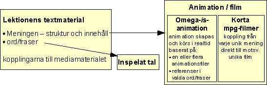
Lektionens byggstenar: Text, struktur, kopplingar och media
Som synes är de ingående grundkomponenterna i sig ganska enkla att överblicka i denna skiss. Textmaterialet är vid detta laget ganska välbekant, liksom det inspelade talet. Lite överraskande är kanske de två typerna av animation resp. mpg-film? Detta kan bero på att nästan allt medföljande material i Omega-is är byggt på Omega-is-animationer. Exempel på användning av mpg-filmer hittar du f.n. endast i lektionen ”Demo3” i ”X-Demo”-mappen – i meningarna ”koppen hoppar över handen” och ”koppen hoppar över koppen”. Vi skall nedan titta på den påtagliga skillnaden i hanteringen av lektioner eller enskilda meningar baserade på animation respektive mpg-film – fördelar och nackdelar. (OBS! ... att även QuickTime-formatets .mov-filmer och ljudformatet mp3 kan användas från version 1.2 !).
I skissen ovan är de mer komplicerade delarna i lektionsmaterialet gömda bakom orden ”struktur” och ”kopplingar”. Ett par övningsexempel får visa hur dessa strukturer och kopplingar kan se ut, var de olika lektions- och mediafilerna lagras i Omega-is mappstruktur, och hur man ger eleven tillgång till nya lektioner.
Vi kommer nu att se på två exempel på lektioner: Den ena bygger på korta videofilmklipp – s.k. mpg- eller mov-filer av den typ som man ofta kan ta med digitala stillbildskameror. Det andra lektionsexemplet bygger på Omega-is eget animationsprogram. Målet är alltså en allmän bekantskap med redigeringsredskapen, lektionerna och deras mediamaterial. Detaljerna kring hur Lektions- och Animationseditorerna används återkommer vi till i de följande kapitlen.
· Starta ”Lesson Editor” – Lektionseditorn
· Välj ”Arkiv” – ”Öppna” - eller klicka på ”Öppna”-ikonen – (mappen)
· Då ser du innehållet i Omega-mappen: Gå in i mappen ”lesson-sv”
· Gå sedan in i mappen ”PassiveLessons” (passiva lektioner)
· Öppna lektionen ”HandCupJumpExample.omega_lesson”
Skärmbilden bör nu se ut som nedan:
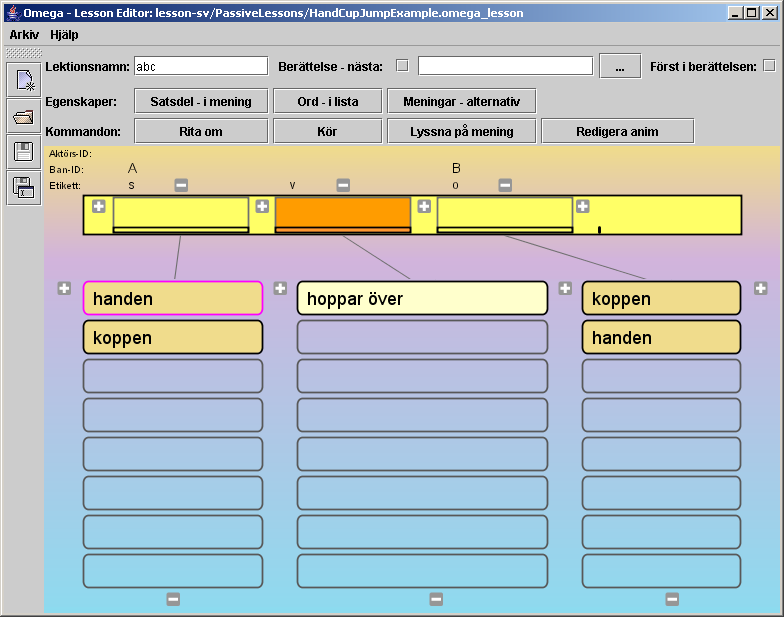
· Klicka på (t ex) ”koppen” (i vänstra kolumnen), sedan ”hoppar över”, sedan ”handen” (i högra kolumnen). Orden pratas och placeras i sina respektive ”fack” i ”Meningsraden”.
· Klicka på knappen ”Lyssna på mening” och hör hela meningen talas.
· Klick på knappen ”Kör” – och en kort videosekvens som illustrerar meningens betydelse spelas upp
· Prova att byta ut ett (eller två) av orden i meningen genom att klicka på motsvarande ord i ”ordlistorna”
· Klicka på ”Kör” igen för att se ett videoklipp för den nya meningen.
Hur hittas rätt videosnutt?
· Klicka på knappen ”Meningar – alternativ”
Följande fönster visas:
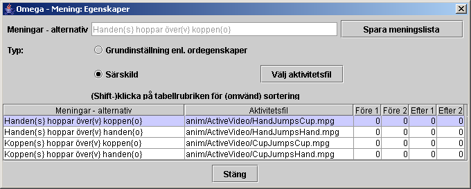
Här visas de fyra meningar/kombinationer som kan skapas i denna övning. Som synes har varje mening kopplats till en ”Särskild” s.k. ”Aktivitetsfil”, dvs små videoklipp i form av mpg- eller mov-filmer. Observera var filmerna finns lagrade – den s.k. ”relativa sökvägen”; ”anim/ActiveVideo/…”. Denna sökväg utgår från ”omega”-mappen, dvs den mapp där Omega-is har installerats på datorns hårddisk. Den nedersta meningen i listan – ”Koppen hoppar över handen” – illustreras av filmen ”CupJumpsHand.mpg”.
· Pröva att återfinna denna film genom att:
1. Klicka på / markera nedersta meningen i listan
2. Klicka på knappen ”Välj aktivitetsfil”
3. Leta upp filen ”CupJumpsHand.mpg” genom att i fil-dialogen (från omega-mappen) först gå till mappen ”anim”, och därefter till mappen ”ActiveVideo”. Välj ”Avbryt” när filen hittats.
Detta exempel har visat hur en enkel lektion baserad på filmklipp är uppbyggd:
Ø Två substantiv (”koppen” och ”handen”), som kan agera som subjekt och objekt, tillsammans med en verbfras (”hoppar över”), kan tillsammans bilda 4 meningar.
Ø Dessa meningar kräver 4 unika illustrationsfilmer – här lagrade i mappen ”../omega/anim/ActiveVideo/”.
Ø Lektionen ”HandCupJumpExample.omega_lesson” är svensk, och finns därför någonstans under ”…/omega/lesson-sv/…” – här i mappen ”PassiveLessons”.
Ø Lektionen refererar också till ljudfiler. Mer om detta i nästa exempel.
· Starta ”Lesson Editor” – Lektionseditorn – om den inte är igång
· Välj ”Arkiv” – ”Öppna” - eller klicka på ”Öppna”-ikonen – (mappen)
· Öppna mappen ”lesson-sv”
· Gå sedan in i mappen ” LessonTemplates” (lektionsmallar)
· Öppna lektionen ” 3WordsExercise-s-v-o-closed.omega_lesson”
Skärmbilden bör nu se ut ungefär som nedan:
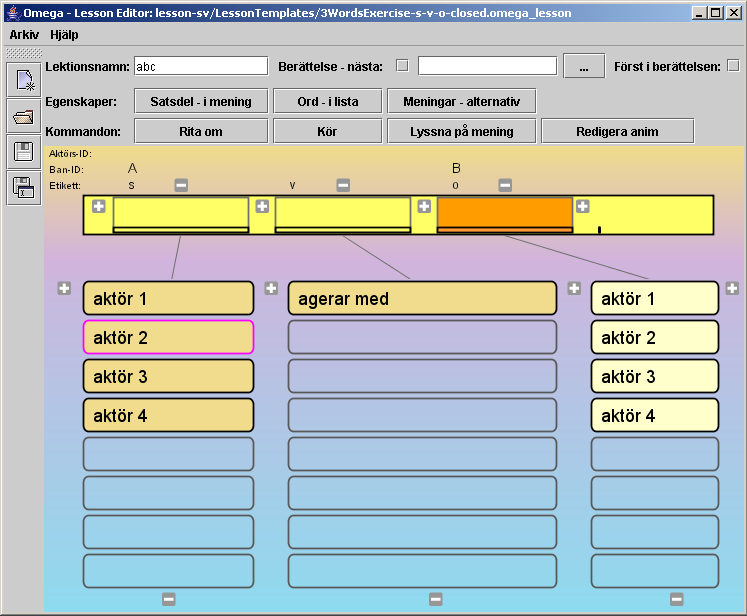
Detta är, som synes, samma lektionsmall som visas när Lektionseditorn startas.
· Börja, som i föregående exempel, med att skapa några meningar genom att klicka på orden i listorna. Använd ”Lyssna på mening” och ”Kör” för att undersöka resultatet!
I denna lektion spelas inga videosekvenser upp vid ”Kör”. Istället körs en animation gjord i Omega-is eget animationsprogram – i olika varianter, beroende på vilka ord – och därmed ”aktörer” – som ingår i meningen.
I denna lektion kan 16 olika meningar skapas (4 x 1 x 4 = 16). Om videoklipp eller traditionella animationer hade använts, så skulle detta ha krävt 16 olika filmer för att illustrera alla varianterna. Här klarar vi oss med en (1) animation som skapas och spelas upp med en rollbesättning som bestäms av den unika mening som skapats.
· Klicka på knappen ”Meningar – alternativ” för att få en överblick över de möjliga meningarna! Jämför med föregående exempel:
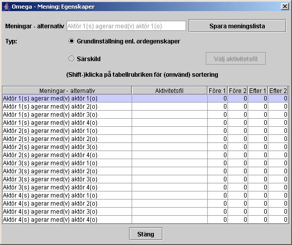
Här finns inga länkar till mpg-filmer för varje mening. Istället är alternativet ”Grundinställningar enl. ordegenskaper” markerat.
Var hittar vi då dessa ordegenskaper och dess länkar till animation och aktörer?
· Stäng dialogen ”Meningar – alternativ” (ovan)
· Klicka på knappen ”Ord - i lista” (eller högerklicka på något ord i listorna). En ”Ord:Egenskaper”-dialog visas.
· Klicka på knappen med verbfrasen ”agerar med” i listan. Följande dialog visas:
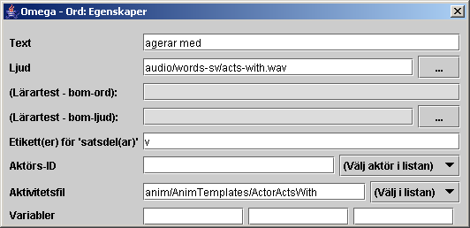
Låt oss titta närmare på innehållet i egenskaperna för knappen ”agerar med”. Vi koncentrerar oss för tillfället endast på de två fält som refererar till mediafiler:
Ø I fältet för ”Aktivitetsfil” finns en referens till dokumentet ”anim/AnimTemplates/ActorActsWith”. Klicka på knappen ”Välj i listan” och leta upp animationsfilen ”ActorActsWith.omega_anim”. Den finns i mappen ”AnimTemplates”, som i sin tur ligger under mappen ”anim” i ”omega”-mappen. Välj ”Avbryt” när filen är funnen.
Ø Den andra kopplingen till ett mediadokument finns i fältet för ”Ljud”. Där länkas till ljudfilen ”audio/words-sv/acts-with.wav” (eller ”…acts-with.mp3”. Som synes är namnet engelskt, men avser svenskt inspelat tal i mappen ”words-sv”, som i sin tur ligger i mappen ”audio”, under mappen ”media” – i ”omega”-mappen.
Känns det överväldigande att hålla rätt på alla dessa dokument och mappar i mappar? Det är i så fall förståeligt. Vi hoppas att detta skall klarna efterhand, och försöker bidra med en överblick över dokumentstrukturen i nästa avsnitt.
Namnen på mediafilerna är engelska för att få ett så lätthanterligt system som möjligt för att länka till motsvarande dokument i olika språkversioner av Omega-is och dess lektioner.
· Klicka nu – fortfarande med ord-egenskapsdialogen öppen – på ett av de andra orden, t.ex. ”aktör 1” i den vänstra listan.
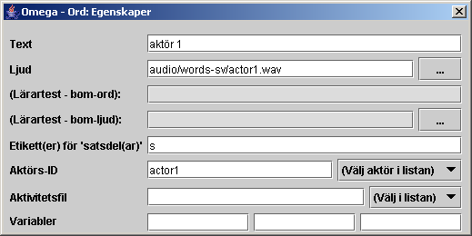
Innehållet i dialogen visar nu egenskaperna för denna ordknapp, såsom dess Text och länken till aktuellt Ljud (liksom förut). Lägg märke till att här inte finns någon länk till en Aktivitetsfil, men istället finns här ett Aktörs-ID angivet – ”actor1”.
· Klicka på knappen ”(Välj objekt i listan)”. Där bör finnas följande ”aktörer” att välja mellan: actor1, actor2, actor3, actor4 och banana. Dessa aktörer finns tillgängliga i Omega-animationen ”ActorActsWith.omega_anim” som länkades till i föregående ordegenskapsdialog.
Övriga detaljer i ordegenskaperna lämnar vi därhän tills vidare.
Vi avslutar detta exempel med att ge en första bekantskap med Animationseditorn:
· Se till att en komplett mening skapats i Meningsraden
· Klicka sedan på knappen ”Redigera anim”. Animationseditorn startas nu med den animation som meningen länkar till:
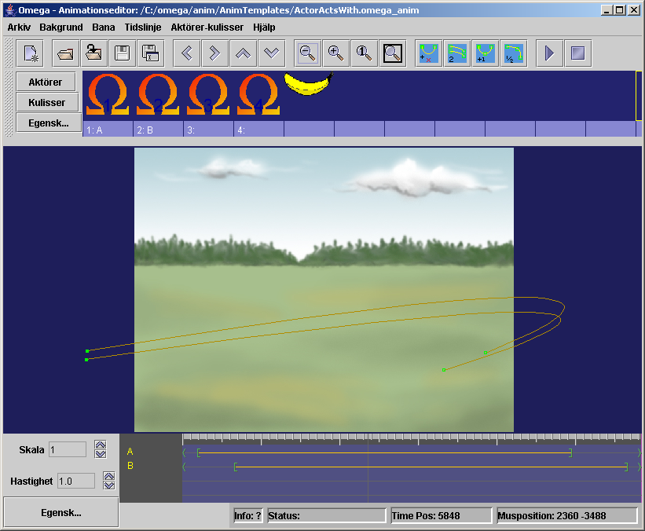
Här ser vi animationen ”ActorActsWith.omega_anim” färdig för redigering. De fyra aktörerna som listades ovan i Lektionseditorn återfinns i Aktörslistan i övre delen av skärmen – fyra Omega-aktörer. Dessutom finns här en outnyttjad banan-aktör.
Vi skall inte nu fördjupa oss mycket mer i Animationseditorns hemligheter; det återkommer vi till nedan i Kapitel F. Vi nöjer oss med att ta en liten titt på aktörernas egenskaper:
· Öppna Aktörsegenskaperna genom att högerklicka på en av aktörerna, t.ex. den första Omega-aktören, längst till vänster i raden. Dialogfönstret (se nedan) visar egenskaperna för den aktör som för tillfället är markerad.
Lägg märke till Aktörs-ID – t.ex.. ”actor1” – som anropas från lektionen för att koppla varje aktörsord i lektionen till rätt aktör i animationen!
Notera också att det är här som aktörens utseende bestäms via kopplingen till en viss bild-fil, i detta fall bilden ”actor_1.png” i mappen ”actor” under ”media”-mappen.
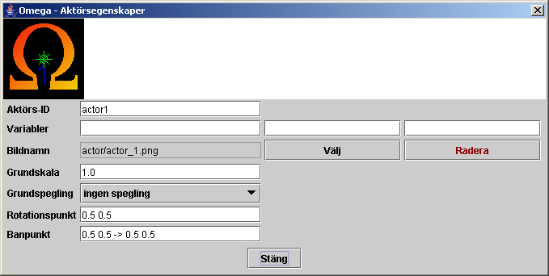
Stäng nu egenskapsdialogen. Notera gärna att de två vänstra aktörerna, som har ”etiketterna” 1 och 2, är kopplade till var sin animationsbana via ett ”Ban-ID” (”A” respektive ”B”). Banorna är representerade nederst på skärmen utefter ”Tidslinjen” – med sina respektive ID – och återfinns också på animationens ”scen”. (Dessa ”Ban-ID” - ”A” och ”B” - finns också refererade i Lektionseditorn – vid boxarna för orden i Meningsraden. Mer om detta i Animations- och Lektionseditorernas kapitel nedan.)
Prova gärna att köra animationen i Animationseditorn genom att klicka på ”spela”-knappen uppe till höger. De två aktörer används är 1 och 2, som är knutna till banorna med ID ”A ”och ”B”. Du kan prova en annan aktör genom att med musen dra en av dessa etiketter till platsen under den önskade aktören.
Avsluta detta exempel med att stänga Animationseditorn (bekräfta med ett ja), och därefter ev. även Lektionseditorn.
Exemplen ovan har givit en första inblick i vilka dokument/filer som används för Omega-is lektioner och animationer. Det har säkert framgått att det är en hel del, och då har vi ändå bara skrapat lite på ytan. Detta inte sagt för att avskräcka, men för att ge en nödvändig förståelse för den komplexitet som tyvärr är mer eller mindre ofrånkomlig i ett multimediaprogram av denna typ.
Man behöver inte ha full kontroll på allt detta för att börja leka med enklare redigeringsuppgifter. Programmet ger dig också ett visst stöd att hitta rätt. Men ju bättre överblick man har, desto lättare är det förstås att undvika onödiga problem.
För att underlätta orienteringen i denna terräng försöker vi nedan ge en överblick över mapp-strukturen i Omega-is-installationen, och över var de olika dokumenten/filerna lagras i dessa mappar.
I Windows installeras Omega-is normalt på hårddisken i en ”omega”-mapp under mappen/katalogen ”Program” (”Program files” på engelska och en del andra system). Den grundläggande katalogstrukturen ser ut ungefär som följer:
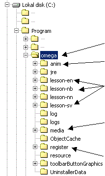
Omega-mappen
I ”anim”-mappen finns de animationsfiler och videoklipp som används för att illustrera språkmaterialet i oOmega-is
I ”lesson”-mapparna finns lektionsdokumenten – för de språk som följer med installationen. De svenska finns i ”lesson-sv”, de engelska i ”lesson-en”, norskt bokmål i ”lesson-nb” etc.
I ”media”-mappen finns allt Omega-is mediamaterial (utom videoklippen i ”anim”), dvs alla bild- och ljudfiler (inkl. de som används i animationerna), inspelat tal för de språk som valts vid installationen, mm.
I ”register”-mappen ligger inställningar och data för de elever som lagts in.
Övriga mappar lämnar vi därhän, eftersom de är av mer teknisk karaktär.
Så fortsätter vi med en närmare titt på de utpekade mapparna ovan.
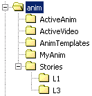Omega-is animationsfiler är textdokument i s.k. XML-format. De innehåller i sig själva inget mediamaterial, utan refererar till bilder och ljud som är lagrade under ”media”mappen. Animationerna är fördelade i följande mappar:
”ActiveAnim” – innehåller alla animationer som används, utom de som hör till berättelserna (L1 och L3) som ligger lagrade under ”Stories”.
Några animationsmallar återfinns i ”AnimTemplates.
En tom mapp ”MyAnim” ligger förberedd för egenutvecklade animationer.
Det begränsade antalet videoillustrationer som medföljer Omega-is finns lagrade i mappen ”ActiveVideo”.
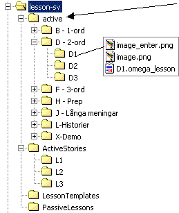I mappen ”active” finns de lektioner som är tillgängliga i elevmenyn – B, D, F, H, J, L och X-lektioner, etc.
Programmet bygger självt upp menyerna utifrån innehållet i ”active”-mappen. Denna kan i sin tur innehålla mappar, och till slut en mapp med en ”xxx..omega_lesson”-fil som startar en lektion – som ”D1.omega_lesson” i exemplet t.v.! Lektionsfilerna är (liksom animationsfilerna) av typen XML.
Varje mapp måste innehålla en bild som heter ”image.png”, och helst även en andra med namnet ”image_enter.png”. Dessa bilder representerar mapparna respektive lektionerna i menyerna
Innehållet i ”historierna” ligger i en särskild ”ActiveStories”-mapp – utom första avsnittet i varje historia, som finns i L-mappen under ”active”.
I övrigt hittar vi här lektionsmallar i ”LessonTemplates”, samt mappen ”PassiveLessons” för eget arbetsmaterial etc.
I den omfattande ”media”-katalogen finns det mycket att förlora sig i. Vi får nöja oss med en översikt över innehållet:
Mappen ”actor” 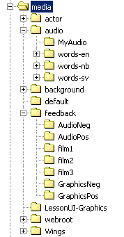innehåller alla de bilder som används som aktörer i Omega-animationerna. De är fördelade på ett flertal underkataloger. En del bilder återfinns som dubbletter, eller i varianter, i flera mappar. Bildformatet är PNG (Portable Network Graphics) med transparent bakgrund (antingen 256 färger + indexerad bakgrund, eller miljoner färger + s.k. Alfa-kanal). Här finns även en mapp för egna aktörer ”MyActors”.
Mappen ”audio” inrymmer de allra flesta av programmets ljudfiler, alla i s.k. wave/mp3-format (”xxx.wav/mp3”). De fördelar sig på två funktioner:
1. De ljudeffekter som används i animationerna – direkt under ”audio”
2. Det inspelade talet för lektionerna – i mappar för de språk som valts vid installationen – ”words-sv”, ”words-en” etc.
Här finns en mapp förberedd för egna ljud – ”MyAudio”.
Mappen ”background” innehåller animationernas bakgrundsbilder – oftast i s.k. JPG-format. Även här finns en mapp för eget - ”MyBackgrounds”.
I mappen ”feedback” finns filmer, bilder och ljud som används som feedback vid körning i ”Test”-läge.
I mappen ”Wings” finns de bilder som används som kulisser i omega-animationerna.
Här finns en mapp för varje registrerad elev. Mapparna innehåller en fil för elevens inställningar – ”pupil_settings.xml”, och en elevbild (”id.jpg”). Dessa filer skapas i samband med att en ny elev läggs in, och uppdateras vid ändringar i elevens inställningar – dvs i ”Lärar”-läge.
Dessutom hittar man datumstämplade registreringar av elevens aktiviteter, vilka kan studeras närmare under ”Resultat” i ”Lärar”-läge.
Därmed har vi tagit oss igenom denna introduktion i Omega-is redigeringsverktyg, datafiler och katalogstruktur.
Vi avslutar med att återknyta till de två exempel på lektioner som beskrivits ovan, och med att dra några slutsatser om de två typer av Omega-is-lektioner de representerar:
Egenskaper: Bygger på kopplingar till inspelade videosekvenser för meningarna, samt på inspelade ljud för de enskilda orden/fraserna
Fördelar: Enkel struktur - mindre antal referenser - endast video-filer (mpg/mov - för meningarna) och ljud-filer (wav/mp3 - för orden/fraserna) att hålla reda på.
Man behöver inte lära sig Animationseditorn för att göra eget material.
Dramatisering och filmning av händelser, med koppling till språkliga uttryck, kan bli en viktig del i en pedagogik där Omega-is används för efterbearbetning av intryck och språkligt material.
Nackdelar: Kräver en film per möjlig mening, vilket kan bli en förfärlig massa utrymmeskrävande mediamaterial vid lite mer komplexa övningar.
Många meningar/händelser kan vara svåra att representera med vanliga videoklipp (om man inte ger sig in på mer ambitiösa projekt med animerad film eller trickfilmning förstås).
Egenskaper: Bygger på kopplingar till Omega-animationer för meningarna – med referenser från ingående ord/fraser till olika aktörer i animationerna, samt på inspelade ljud för de enskilda orden/fraserna
Fördelar: Effektivt och flexibelt: En animation kan representera ett flertal meningar i lektionen. En lektion, med flera hundra möjliga meningar, kan byggas på ett fåtal animationer.
Nackdelar: Mer komplex struktur - ett antal referenser (och möjliga variabler) att hålla reda på - från orden i lektionen till olika animationer, och till olika aktörer och deras banor i animationerna.
Man måste förstås lära sig Animationseditorn för att göra och redigera material baserat på Omega-animationer.
Lektionseditorn ger möjlighet att skapa nytt lektiosmaterial. Det kan röra sig om helt nya lektioner som anpassas till en elevs unika motivation och behov eller om justeringar av befintligt material.
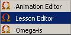
Lektionseditorn är ett eget program som öppnas genom att från startmenyn välja Lesson Editor. Klicka på ikonen för Omega Lesson Editor och vänta tills programmet startat.
OBS! Lektionseditorn håller reda på om ändringar gjorts i en lektion! Om de inte sparats markeras detta i fönstrets ”titelrad”, och en varning ges vid kommandona ”Avsluta”, ”Öppna” eller ”Nytt”.
När programmet startats hamnar du först i ett s.k. default-läge där det finns möjlighet att skapa helt nya lektioner (se detta avsnitt). Här är dock uppgiften att ändra en befintlig lektion.
1. Klicka på symbolen för Öppna, alternativt gå in under Arkiv – Öppna.
2. Öppna den språkmapp där du vill ändra befintlig lektion t.ex. lesson-sv om det är en svensk lektion.
3. Öppna mappen Active
4. Öppna den mapp som motsvarar den sökta lektionens lektionsnivå (B-D-F etc.)
5. Öppna sedan mappen med det lektionsnummer du vill ändra – och slutligen själva lektionsfilen (som har ett namn som slutar med ”.omega_lesson”).
Du vill ta bort ett ord som eleven upplever så störande att han/hon inte klarar att arbeta vidare. Ordet och dess länkningar till animationer och ljudeffekter kommer att försvinna. I följande exempel ska ordet ”påsen” i övningslektionen Xercise-B2 bort. Gör följande:
· Öppna med Lesson Editor den lektion där ordet finns (Xercise-B2 i mappen ” Xercises” i ”X-Demo”-lektionerna). Om ett ord på allvar behöver rensas bort i de vanliga lektionerna, får proceduren upprepas för varje lektion där ordet finns.
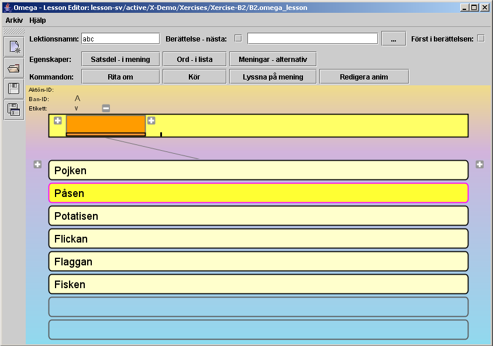
· När lektionen öppnats syns en lista med samtliga ord som förekommer i lektionen.
· Klicka därefter på knappen märkt ”Ord - i lista” – eller högerklicka på något av orden i listan. Då öppnas dialogfönstret ”Ord: Egenskaper” (se nedan).
· Klicka därefter på ordet ”Påsen” i listan. Då visas egenskaperna för detta ord i dialogrutan enl. nedan. Placera markören och ta bort ordet som är skrivet i fältet ”Text”. Stäng dialogrutan och spara ändringen innan Lektionseditorn avslutas – genom att klicka på diskettsymbolen (Spara) eller gå in under Arkiv och välja Spara. Nu kommer ordet ”Påse” inte att finnas med när man arbetar med denna lektion.
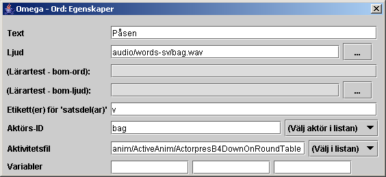
· Öppna med Lesson Editor den lektion där ordet ska läggas till.. Återigen använder vi lektion Xercise-B2 som exempel. Klicka dig fram via mapparna ”lesson-sv”, ”active”, ”X-Demo” och ” Xercises” så att du ser lektionen. Öppna den så att du ser listan med orden som förekommer i lektionen.
· Klicka på knappen märkt ”Ord - i lista” – eller högerklicka på något av orden i listan – så att dialogen ”Ord: Egenskaper” öppnas.
· Klicka därefter på en tom textknapp nedanför de befintliga. Den blir markerad med en färg i ytterkant. Sätt markören i fältet Text i dialogen och skriv in ordet du vill lägga till t.ex. ”Dammsugaren”. Bokstäverna syns samtidigt på ordknappen. (Detta ord – ”dammsugaren” - råkar finnas representerat med en aktör i en av animationerna. Om man vill lägga till ett nytt ord som inte kan illustreras med en aktör i de befintliga animationerna, ja då får man naturligtvis börja med att lägga till en lämplig aktör (med motsvarande bildfil) i en befintlig eller ny animation – se nästa kapitel F.)
· Klicka på blädderknappen ”…” på raden för Ljud. Leta upp ljudfilen där ordet ”Dammsugaren” är inspelat (vacuum.wav(mp3) i mappen Media/Audio/words-sv). Dubbelklicka på filen eller markera den och tryck på knappen ”Ladda”. Då är länkning gjord till det inspelade ljudet.
· Egna ljud kan spelas in via en mikrofon kopplad till datorns mikrofoningång. Man kan använda ”Ljudinspelaren”, standardprogrammet i Windows, men vi rekommenderar gratisprogrammet Audacity (se Multimediabyrån på www.multimedia.skolutveckling.se eller http://audacity.sourceforge.net), ljudredigeraren i CD/DVD-paketet Nero, eller något annat av de många program för ljudredigering som finns på marknaden (t ex GoldWave, SoundForge etc.). OBS! Kvaliteten på ljud inspelade direkt i datorn kan variera väldigt mycket. Ta gärna hjälp av någon ljudkunnig person för att få bättre kvalitet. Spara ljudfiler i wav- eller mp3-format och flytta dem till mappen ”media/audio/words-sv” etc.
· För att få en länkning till en animering av ordet måste först en animation - eller s.k. ”Aktivitetsfil” - väljas som innehåller en aktör som motsvarar ordet. Detta görs ur det bibliotek av animationsfiler som finns under knappen ”Välj i listan” längst till höger samma rad (nedåtriktad pil - <välj fil>). Markera lämplig animation – i detta fall filen ”B1.omega_anim” i mappen ”ActiveAnim” – och klicka sedan på Välj.
· Därefter ska aktörs-ID fyllas i dvs. det unika namn som är tilldelat aktören i animationen som skall kopplas till ordet. Klicka först på knappen med ordet ”Dammsugaren” så att ordet kommer upp i ”Meningsraden”. Klicka sedan på kanppen ”Välj aktör i listan”. Där bör du kunna välja aktören ”VacuumCleaner”. Du kan också själv skriva in detta aktörs-ID. Provkör!
· Stäng dialogrutorna och Spara ändringarna innan Lektionseditorn stängs.
För att kunna skapa helt nya lektioner kan befintligt material användas i nya kombinationer. Detta görs lämpligast genom att kopiera en mapp i active-mappen för det språk som är tänkt, exempelvis lesson-sv, mapp D2. Den kopierade mappen kan lämpligen döpas om till t.ex. D4 (i installerad version finns enbart D1-D3). Därefter öppnas lektionen i Lektionseditorn. Nya ord skrivs in på det sätt som beskrevs ovan. Aktivitetsfiler, aktörer och ljud väljs etc.
Om en lektion skapas med helt nytt material måste ljudinspelningar finnas, liksom animationer med bakgrunds-, kuliss- och aktörsbilder, alternativt videoklipp, i de bibliotek som är avsedda för detta. Se bl a. Animeringsdelen (nästa kapitel) för hur detta ska göras. För ett-ords, två-ords och tre-ordslektioner finns mallar i mappen Lesson Templates som kan användas för detta.
Vi ger här två exempel:
1. Hur en tre-ordslektion kan skapas när man utgår från en existerande lektion, och från befintliga animationer och befintligt mediamaterial
2. Hur en lektion med helt nytt material skapas med hjälp av videoklipp och nyinspelade ljud
· - Starta
Lektionseditorn (Lesson editor) – välj Öppna
-
Gå tillmappen ”lesson-sv\active\X-Demo\Xercises\Xercise-Demo1”
- Öppna där lektionen ”demo.omega_lesson”
· Vi har här
en lektion baserad på aktiviteterna ”jagar” och
”hoppar över”. Lektionen utnyttjar två
animationer som illustrerar dessa händelser.
Vi vill nu se
om vi kan utnyttja detta material med nya aktörer, så att
vi kan arbeta med ord och meningar som inte finns i de medföljande
basövningarna.
· Klicka på
ordet ”jagar” så att det hamnar i Meningsraden
-
Klicka sedan på knappen ”Redigera anim” –
Animationseditorn öppnas med
den animation som är
kopplad till ordet ”jagar” (ChaseChased.omega_anim)
-
Notera vilka aktörer som finns tillgängliga i animationens
aktörslista
· Stäng
animationseditorn – klicka sedan på ”hoppar över”
(som ersätter ”jagar” i Meningsraden) och aktivera
åter knappen ”Redigera anim” – nu öppnas
Animationseditorn med animationen ”JumpOver.omega_anim”
-
Jämför innehållet i aktörslistan med föregående
animation (se nedan) 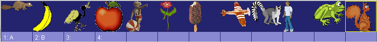
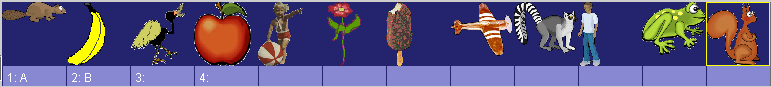
Som synes finns bl a en bäver, en groda och en ekorre med i båda.
· Vi väljer därför att skapa en jaga-hoppa-över-lektion med aktörerna ”grodan”, ”bävern” och ”ekorren” (Det går naturligtvis också att spara om animationerna ovan under nya namn, för att göra en helt ny gemensam aktörslista för de båda animationerna, och sedan använda dessa i den nya lektionen):
- Välj ”Arkiv” – ”Spara som” för att spara om den öppna lektionen under ett nytt namn. Då öppnas en Spara-dialog enligt nedan.
- Gå upp en nivå i mappstrukturen:
- Skapa där (i mappen ” Xercises”) en ny mapp, klicka först en och sedan en gång till på mappens namn (Ny mapp) och döp den till ”Xercise-Lesson1”, gå in i mappen och spara filen som t ex ChaseJump_new.omega_lesson.
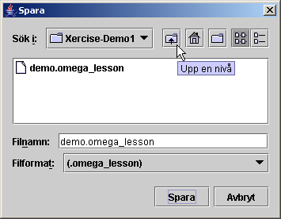 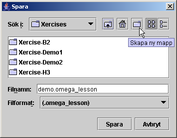
 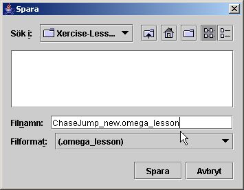
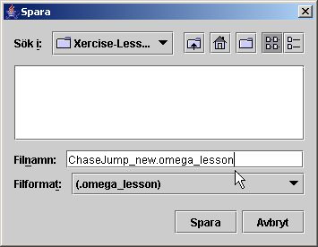
· Nu är det dags att ändra innehållet i lektionen:
- Klicka först fram en mening på Meningsraden (t ex ”Pojken jagar glassen”)
- Öppna dialogen för Ord: Egenskaper (knappen ”Ord - i lista” eller högerklick på något av orden) och klicka på ordet ”pojken”, så att dess egenskaper visas.
- Ersätt i formuläret texten ”pojken” med ”Grodan”
- Klicka på knappen ”…” vid Ljud och bläddra fram ljudfilen ”frog.wav(mp3)” i mappen ”audio\words-sv”
- Vid Aktörs-ID rensas ”boy” bort och ersätts genom ”Välj aktör i listan” med ”frog”
- Fortsätt med att ersätta/lägga in de övriga nya aktörerna i kolumn 1 och 3 för alla de tre aktörerna grodan(frog), bävern(beaver) och ekorren(squirrel) enligt bilderna nedan.
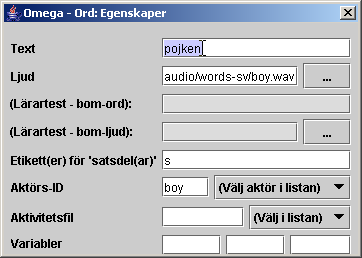à 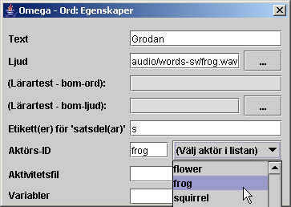
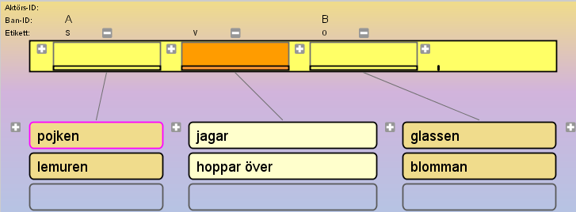à 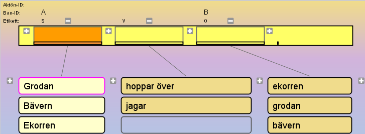
· Provkör, korrigera och spara den nya lektionen – provkör i lektionsdelen.
Vi ska nu se hur det kan gå till att skapa en
lektion baserad på helt nytt mediamaterial. Vi väljer då
att utgå från videoklipp, eftersom detta inte kräver
kunskaper och färdigheter i att hantera Animationseditorn och
all bild- och ljudhantering i anslutning till skapandet av
animationer (se kapitel F).
Det vi behöver är ett antal
korta videosekvenser som illustrerar de meningar vi vill kunna skapa,
samt ljudinspelningar för de ord eller fraser som ingår.
· Vi börjar
med att planera lektionens innehåll, och tänker oss
följande utseende:
prinsessan
pussar
prinsen
prinsen
knuffar
prinsessan
Detta skulle kräva 2×2×2=8 stycken videosekvenser för att täcka alla möjliga kombinationer, och 4 ljudinspelningar för de ingående orden
· Det är nu dags att se till att dessa mediafiler kommer på plats – antingen genom att spela in dem själv eller med hjälp av någon annan resurs.
- Spela in de fyra orden – enligt anvisningarna i nästa avsnitt – och placera ljudfilerna i mappen ”media\audio\words-sv\MyWords” under omega-mappen. Om filerna ges engelska namn är det lättare att utan förvirring överföra materialet till andra språkversioner – alltså: ”princess.wav(mp3)”, ”prince.wav(mp3)”, ”kisses.wav(mp3)”, ”pushes.wav(mp3)”. (Varför inte spela in orden på engelska när vi ändå är igång? Lägg orden i motsvarande mapp under ”words-en”.)
- Dramatisera nu de 8 händelserna – antingen med levande aktörer, eller med handdockor eller dylikt.
- Spela in med videosekvensfunktionen i en digital stillbildskamera, eller med en videokamera.
- Överför videoklippfilerna till datorn och
placera dem i mappen ”anim\ActiveVideo” under
omega-mappen.
OBS! Videosekvenserna bör i allmänhet
vara mycket korta, c:a 3 – 10 sek.
OBS också att
videofilerna skall vara av s.k. MPG- eller MOV-typ! Även s.k.
AVI-filer kan i allmänhet användas, men måste då
döpas om med ändelsen ”.mpg”.
· Starta Lektionseditorn (om den inte redan är igång)
- Öppna lektionen ”3WordsExercise-s-v-o-VideoClip” i mappen ”lesson-sv\LessonTemplates”
- Välj ”Arkiv”- ”Spara som” och spara lektionen i en ny mapp t.ex. under mappen ”lesson-sv\active\X-Demo\Xercises”
- Öppna egenskapsdialogen för ”Ord i
lista” och lägg in orden enligt lektionsplanen ovan. Länka
också in de nyinspelade ljudfilerna för orden (från
mappen ”media\audio\words-sv\MyWords”).
OBS! I denna lektion, baserad på videoklipp, behöver
inga Aktörs-ID anges, eller s.k. aktivitets- eller
animationsfiler länkas in i egenskapsdialogen.
- Stäng ordegenskapsdialogen när detta är klart och spara lektionen.
- Klicka på knappen ”Meningar - alternativ”, och markera därefter radioknappen ”Särskild” (vid Typ) och använd ”Välj aktivitetsfil” för att leta upp rätt videofil från mappen ”anim\ActiveVideo” – se bild nedan.
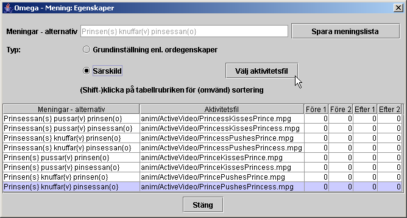
· Stäng egenskapsdialogen Meningar – alternativ, spara lektionen, provkör från Lektionseditorn (korrigera om nödvändigt) och sedan från lektionsläget i huvudprogrammet.
Egna ljud kan spelas in via en mikrofon kopplad till datorns mikrofoningång. Man kan använda ”Ljudinspelaren”, standardprogrammet i Windows. Detta återfinns oftast under Tillbehör – Underhållning i Startmenyn. Skulle det inte finnas där kan man leta upp det under namnet sndrec32.exe i WINNT- eller Windows-katalogen och ”system32”-mappen. Här finns bara mycket basala redigeringsmöjligheter, som att beskära ljuden i början och slutet.
För bättre inspelnings- och ljudbearbetningsmöjligheter kan man rekommendera en användning av gratisprogrammet Audacity (se Multimediabyrån på www.multimedia.skolutveckling.se eller http://audacity.sourceforge.net) alternativt ljudredigeraren i CD/DVD-paketet Nero, eller något annat av de många program för ljudredigering som finns på marknaden (t ex GoldWave, SoundForge etc.).
OBS! Kvaliteten på ljud inspelade direkt i datorn kan variera väldigt mycket. Ta gärna hjälp av någon ljudkunnig person för att få bättre kvalitet. Bättre är oftast att spela in ljud på en extern inspelningsutrustning och sedan spela in det på datorn via Line-ingången, alternativt överföra färdiga ljudfiler på annat sätt.
Ljudfilerna skall vara sparade i wav- eller mp3-format och placeras i mappen ”media/audio/words-sv” (-en etc) för inlästa ord/fraser till lektionerna, alternativt ”media/audio”-mappen för effektljud till animationerna.
I allmänhet rekommenderas den tekniska kvalitén 44 100 kHz; 16 bitar; mono eller stereo, för de digitala ljudfilerna.
Lektionsmenyerna i Omega-is avbildar dynamiskt innehållet i mappen ”active” under ”lesson-xx”, där ”xx” står för respektive språk; ”sv” för svenska, ”en” för engelska, ”nb” för norskt bokmål, ”nn” för nynorsk etc.
För att göra en ny lektion tillgänglig i lektionsmenyn skapar man en mapp med det namn man vill att lektionen skall ha. I denna placeras lektionsfilen xxx.omega_lesson. Vill man att lektionens knapp skall representeras av bilder måste en-två bildfiler med namnen image.png och image_enter också finnas i denna lektionsmapp. (Den bild som slutar med ”_enter” är den som visas när knappen har fokus via muspekaren eller tangentstyrning).
Strukturen för detta finns avbildat ovan under kapitel D, avsnittet ”Mappen ”lesson-sv” - svenska lektioner” på sid 27. De bilder som används för image- och image_enter-filerna finns samlade i mappen ”LessonUI-Graphics” under ”media”-mappen.
Lektionseditorn innehåller en rad mer sofistikerade funktioner för att dynamiskt bygga upp referenser från elevens val i lektionen till rätt animationsfiler och aktörer i dessa. Dessutom finns funktioner för att överföra information mellan en serie lektioner – och valen i dessa – för att på så sätt kunna bygga upp berättelser.
Dessa funktioner är ibland något komplexa att förklara och ta till sig. Vi nöjer oss här med en ganska kort presentation, och hänvisar därutöver intresserade lektionsförfattare till att se på, lära av och återanvända innehållet och funktionaliteten i befintliga lektioner och berättelser.
I en lektion kan upp till tre variabler anges (1, 2 och 3) i
egenskapsdialogen för varje ord i ordkolumnerna. Dessa variabler
kan anropas från fälten för Text, Ljud och/eller
Aktivitetsfil i egenskaperna för orden i andra kolumner –
eller från egenskapsdialogen för satsdelarna i
Meningsraden – i lektionen. Detta kan vi kalla för
”interna” variabelreferenser. (Variablerna kan också
anropas mellan olika dellektioner i berättelser –
”externa” variabelreferenser).
Formatet för interna anrop av variabler är {+1} för
variabel 1 från nästa ordkolumn (t.h.), {++3} för
var. 3 i nästnästa, {-2} för var. 2 i föregående
kolumn (t.v.) etc.
Många
exempel på intern variabelanvändning återfinns i
lektionerna H3-H5, samt i J-lektionerna.
För mer detaljer om
externa variabelreferenser i berättelser – se nedan under
”Berättelser”.
Normalt länkar varje mening i en lektion till en
animationsfil. Men det finns faktiskt möjlighet att länka
till mer än en enda animation, d.v.s. att t.ex. spela upp två
(eller fler) animerade scener i följd som illustration till en
mening.
Detta kan ske på flera
sätt: Ett sätt är att två aktivitetsord länkar
till var sin animation – som i exempelanimationen
”Demo-LinkedAnim”-lektionen, som finns i den svenska
Lektionsmenyn under X-Demo–Xercises, i mappen
”lesson-sv\active\X-Demo\Xercises”.
Ett annat sätt
ar att ange flera animationsfiler med kommaseparering i egenskaperna
för ett aktivitetsord (se storylektionen L3-8 i mappen L3 under
”lesson-sv\ActiveStories”). OBS! Motsvarande kan också
behöva göras för Aktörs- och Ban-Id:n.
När en berättelse skall konstrueras behövs funktioner för att bevara minnet av tidigare val av aktörer, miljöer mm så att tråden i historien upprätthålls. Detta åstadkoms i Omega-is genom extern variabelanvändning, genom vilken informationen överförs mellan dellektionerna. Vi ser på några exempel i de medföljande L1- och L3-berättelserna:
Första delen av L1-berättelsen ”L1-1” hittar vi i ”lesson-sv\active\L_Historier\L1”.
Där finner vi följande egenskaper för den ena av de två alternativa huvudaktörerna i storyn – ”hunden med den gula hatten” (den andra är ”dinosaurien med den röda halsduken”):
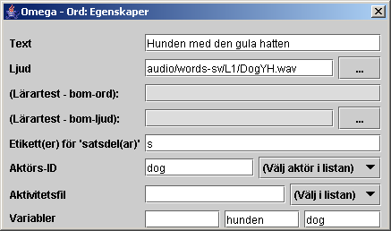
Lägg märke till Aktörs-ID (”dog”) och de två variablerna ”hunden” (var-2) och ”dog” (var-3)!
Denna lektion har fått sitt ”Lektionsnamn” satt till ”L1-1” och har markerats som ”Först i berättelse”
Med detta i minnet letar vi upp avsnittet ”L1-5” längre fram i berättelsen. Detta hittar vi i mappen ”C:\omega\lesson-sv\ActiveStories\L1”. Där tittar vi på egenskaperna för frasen ”- sa dinosaurien”:
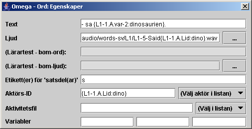
Innehållet i ”Text” är som synes ”- sa {L1-1.A.var-2:dinosaurien}.”
Detta betyder i att variabel 2 (”var-2”) för aktören vid Ban-ID ”A” i lektion ”L1-1” anropas. Om denna variabel inte finns tillgänglig används värdet efter kolon-tecknet dvs. ”dinosaurien”. Delarna i variabelreferensen separeras med punkter, och alltihop hålls samman av klammerparenteser.
Om vi i L1-1 valt ”Hunden med den gula hatten” blir värdet för ”L1-1.A.var-2” vara lika med ”hunden”. Texten som visas i knappen blir då – istället för den kryptiska variabelreferensen – i klartext: ”- sa hunden”.
Titta också på variabelreferensen vid ”Aktörs-ID”: Där anropas Aktörs-ID – här kallat ”Lid” – för aktören vid Ban-ID ”A” i lektion ”L1-1”. Default anges ”dino” (efter kolon), men i vårt fall skulle det blivit ”dog” som var Aktörs-ID för hunden.
Även vid ”Ljud” utnyttjas variabeln ”Lid” för att få ljudfilen att matcha texten för den aktör vi valt att följa i berättelsen.
Som synes gäller det att hålla tungan rätt i mun med referenserna för att få allt att stämma. Det hela kan bli ganska komplext i en lite mer invecklad berättelse än denna. Den intresserade kan fördjupa sig i variabelhanteringen i L3-berättelsen för att se hur detta kan se ut.
Där kan vi hitta referenser av typen:
”anim/Stories/L3/L3-5{L3-4.W4.var-3:meadow}” – vilket i klartext betyder att här anropas animationsfilen L3-5 – med tillägget från variabel 3 (var-3) från valt ord i ordkolumn 4 (W4) i lektion L3-4, och att default är tillägget ”meadow” ( dvs ”L3-5meadow”).
OBS att det från verion 1.2 också är möjligt att anropa variabler i lektionerna direkt från de animationer som anropas! Se variabler i kapitel F nedan!
Här följer en listning av kommandon och funktioner i Omega-is Lektionseditor:
Arkiv:
 Nytt
– öppnar en ny lektionsfilsmall
Nytt
– öppnar en ny lektionsfilsmall
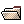Öppna – visar öppna-dialogen för att hämta en befintlig lektion
Spara – sparar öppen lektion under aktuellt namn
Spara som – visar Spara-dialogen för angivande av namn på filen
Avsluta – avslutar Lektionseditorn – via kontrollfråga.
Hjälp:
- Visa manual – visar redigeringsdelarna av denna manual
- Om Omega-is – visar informationsruta om Omega-is
- Om Lektionseditorn – visar informationsruta om Lektionseditorn
Knappar / funktioner i Verktygsfältet :
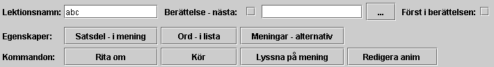
Berättelsefunktioner:
- Lektionsnamn – möjlighet att namnge lektion – används för referenser mellan dellektioner i berättelser
- Berättelse – nästa: – anger nästa lektionsfil i en berättelsesekvens. Checkrutan bockas för och nästa lektionsfil letas upp m hj a Bläddraknappen ”…”
-
Först i berättelsen:
– checkrutan markeras om aktuell lektionsfil är först
i en berättelsesekvens. Ett sådant första
lektionsavsnitt i en berättelse skall ligga i en egen mapp under
L_Historier i ”active”-mappen under ”lesson-xx”.
Övriga
filer i berättelsen kan lämpligen läggas i en gemensam
mapp under ”ActiveStories”-mappen.
Egenskapsknappar:
- Satsdel – i mening – öppnar egenskapsdialogen för mottagande satsdelsplatser i Meningsraden – kan även öppnas med högerklick på en plats i Meningsraden.
- Ord – i lista – öppnar egenskapsdialogen för orden i ordlistekolumnerna – kan även öppnas med högerklick på ett ord i kolumnerna.
- Meningar – alternativ – öppnar fönstret för meningsegenskaper, dvs listan över de möjliga meningar/kombinationer som kan skapas av orden/fraserna i lektionen – med möjlighet att länka till videoklipp, samt att välja ut särskilda meningar för specialpreparerade för- och efterstest i lärarläge.
Kommandonappar:
- Rita om – ritar om fönstret – kan ibland behövas efter tillägg eller radering av ordkolumner eller satsdelsplatser etc.
- Kör – kör / spelar upp den animation som motsvarar aktuell mening i meningsraden. Kräver förstås att en sådan mening skapats.
- Lyssna på mening – spelar upp ljudfilerna som motsvarar orden/fraserna i aktuell Mening på meningsraden.
- Redigera anim – öppnar Animationseditorn med den animation som länkats av aktivitetsordet aktuell mening på Meningsraden (ev. påverkat av referenser i andra ord) .
Lektionsytan:

Plus-
 och Minus-
och Minus-
 -knapparna vid meningsraden och ordkolumnerna (se bilden
ovan) lägger till eller tar bort plats för ’satsdel’
respektive ordkolumn – efter en kontrollfråga. OBS
- högst 6 platser/satsdelar i meningsraden!
-knapparna vid meningsraden och ordkolumnerna (se bilden
ovan) lägger till eller tar bort plats för ’satsdel’
respektive ordkolumn – efter en kontrollfråga. OBS
- högst 6 platser/satsdelar i meningsraden!
Egenskapsdialogerna:
Satsdel – i mening:
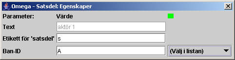
- Text – visas ev. valt ord/fras för satsdelen /målordet – ingen inmatning!
- Etikett för ’satsdel’ – sätts till samma som för den ordkolumn som skall kopplas.
- Ban-ID – Väljs av tillgängliga för önskad roll i aktuell(a) animation(er). OBS! Kan referera till variabel från annan ordkolumn för val av Ban-ID (t.ex. lektion H4).
Ord – i lista:
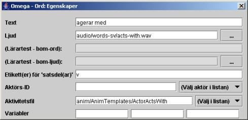
- Text
– det ord eller den fras som skall visas och väljas för
placering i meningen.
OBS! Ordet/frasen kan innehålla variabler från
andra ordkolumner som modifierar vad som visas och sänds till
meningsraden.
- Ljud
– den ljudfil som matchar texten.
OBS!
Filreferensen kan innehålla variabler från andra
ordkolumner som modifierar densamma – se nedan under
”Variabler”.
- (Eftertest – bom-ord): – eventuellt bom-ord (distraktionsord) för för- och eftertest i lärarläge.
- (Eftertest – bom-ljud): – ljudfil som matchar bom-ordet.
- (Etikett(er)
för ’satsdel(ar)’ – här
anges en etikett som matchar den ”satsdel” i meningen där
ordet/frasen skall hamna vid val.
OBS! Etiketten
gäller för hela ordkolumnen och behöver inte anges för
varje ord.
OBS! Två etiketter kan anges –
separerade av kommatecken – för att koppla en ordkolumn
till två olika satsdelsmål i meningsraden – som i
lektion F3, F9 etc. där substantiven kan vara både subjekt
och objekt i meningen.
OBS! Flera ordkolumner
kan ha samma etikett så att de matar in till samma satsdel i
meningsraden – som i 1-ordlektionerna B3 och B4.
- Aktörs-ID
– väljs för att matcha ”aktörsord”
till rätt aktör i rollistan för den animation som
länkats via aktivitetsordet (inklusive eventuella variabler från
andra ord). Gällande aktörer hittas under ”(Välj
aktör i listan)” – under förutsättning att
en mening skapats i meningsraden så att en animation är
refererad.
OBS! Aktörs-ID skall givetvis inte anges för ord
som inte skall referera till någon aktör i animationen,
såsom ”aktivitetsord” (oftast verb) och ord med
andra funktioner.
- Aktivitetsfil
– för s.k. aktivitetsord (oftast verb) anges här den
animationsfil som motsvarar den händelse som aktivitetsordet
(tillsammans med ev. variabler) implicerar.
OBS!
Filreferensen kan innehålla variabler från andra
ordkolumner som modifierar densamma – se nedan under
”Variabler”.
-
Variabler – Här kan upp till tre
variabler anges (1, 2 och 3) för att anropas från fälten
för Text, Ljud och/eller Aktivitetsfil i egenskaperna för
orden i andra kolumner i lektionen (”interna”
variabelreferenser), eller t.o.m. från andra lektioner i
berättelser (”externa” variabelreferenser).
Formatet för att anropa variabler internt är {+1} för
variabel 1 från nästa ordkolumn (t.h.), {++3} för
var. 3 i nästnästa, {-2} för var. 2 i föregående
kolumn (t.v.) etc.
För mer detaljer och om externa
variabelreferenser i berättelser – se tidigare avsnittet
ovan om ”Avancerat – variabler, berättelser mm”.
Meningar – alternativ:
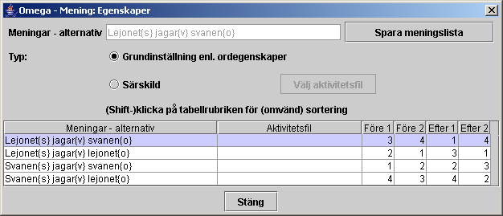
Denna dialog visar en lista över alla de meningar som kan skapas med hjälp av orden eller fraserna i lektionen – för översikt och dokumentation, för ev. länkning till särskilda videoklippfilmer, samt för särskilt urval till test i lärarläge.
Spara meningslista –listan sparas som en textfil för dokumentation och utskrift från ett textredigeringsprogram
Grundinställningar enl. ordegenskaper – är grundinställningen som innebär att meningen illustreras med en Omega-is-animation enligt det som ställts in i lektionsmaterialet.
Särskild – Välj aktivitetsfil – innebär att markerad mening kopplas direkt till en mpg/mov-videofilm.
Numrering i listan under Före 1 o 2, Efter 1 o 2 – här styrs vilka meningar som skall utnyttjas i För- och Eftertest i lärarläge, och i vilken ordning de skall presenteras.
Animationseditorn ger möjlighet att skapa helt nya animationer, som sedan kan kopplas till nytt språkligt material i Lektionseditorn.
Men Animationseditorn ger också möjlighet att förändra existerande lektioner. Man kan t ex lägga in en alternativ bild eller förändra hastigheten på någon av aktörerna i animationen. Man vill kanske lägga in en annan bakgrund än den som finns i den givna lektionen. Kanske är en bild på elevens egen skolgård mer stimulerande för eleven.
OBS! Animationseditorn håller reda på om ändringar gjorts i en animation! Om de inte sparats markeras detta i fönstrets ”titelrad”, och en varning ges vid kommandona ”Avsluta”, ”Öppna” eller ”Nytt”.
Först en titt på Animationseditorns fönster och dess delar:
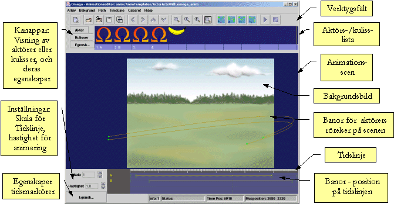
Animationseditorn är ett eget program som antingen kan öppnas genom att välja ”Redigera anim” inifrån Lektionseditorn (se föregående två kapitel), eller genom att från Startmenyn välja Animation Editor.
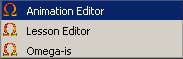
Ett bra sätt att komma igång med att använda Animationseditorn är att göra små ändringar av, eller tillägg till, befintliga animationer.
· Starta Lektionseditorn.
- Öppna lektionsfilen ”HeadlessHunt.omega_lesson” som används i lektionen ”Xercise-Demo2” i mappen ” Xercises” i ”X-Demo”-lektionerna. Vi skall lägga till ett par nya huvuden till de andra utbytbara i denna jaga-animation.
- Klicka på några av orden i lektionen så att en komplett mening bildas i Meningsraden.
- Klicka sedan på knappen ”Redigera anim” – Animationseditorn öppnas då med animationen ” HeadHunters.omega_anim” (i mappen /anim/MyAnim).
· Maximera fönstret. I aktörslistan finns två huvudlösa figurer plus fyra huvuden (tillhörande detta programs upphovsmän) – enligt nedan. Vi skall nu lägga till ytterligare ett par tvivelaktiga figurer. Högerklicka på den första tomma platsen i aktörslistan (eller vänsterklicka på rutan och sedan på knappen ”Egensk...”).
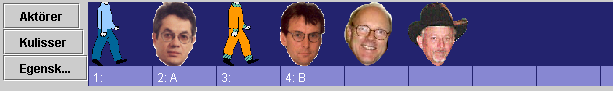
· En tom Aktörsegenskaper-dialog visas – klicka på knappen ”Välj” för att länka in en ny aktör/bild. Öppna mappen ”actor”, och sedan ”MyActors” och välj filen ”bush.png”.
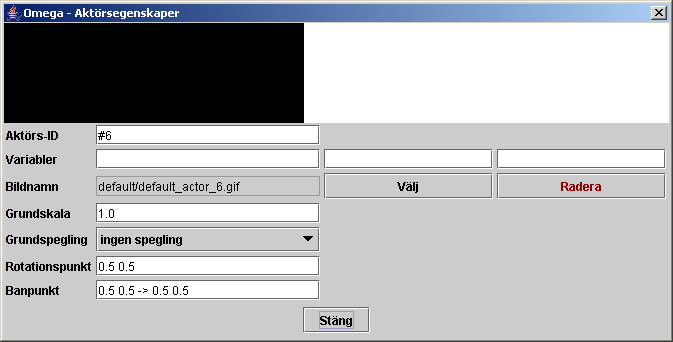
· Upprepa proceduren för nästa aktörsplats och välj filen ”saddam.png”. Aktörslistan bör nu se ut enligt nedan:
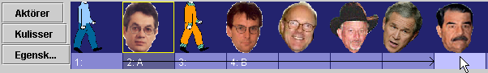
Tag med musen tag i etiketten ”2:A” och dra den till Saddam-aktören, som bilden ovan visar. Gör motsvarande med etiketten ”4:B” men till Bush-aktören.
· Stäng
Aktörsegenskaper-dialogen så att det inte är i vägen.
Provkör nu animationen med de två nya aktörerna:
Klicka på Spela-knappen!
 Resultatet visar att vi är på god väg, men att vissa
justeringar behövs. Huvudena på Bush och Saddam är en
smula felplacerade under animeringen, och möjligen lite för
stora (men detta kan ju också vara en rolig poäng …).
Resultatet visar att vi är på god väg, men att vissa
justeringar behövs. Huvudena på Bush och Saddam är en
smula felplacerade under animeringen, och möjligen lite för
stora (men detta kan ju också vara en rolig poäng …).
· Öppna åter Aktörsegenskaper-dialogen genom att högerklicka på ett av huvudena, t ex det första av dessa. Egenskaperna för aktören med Aktörs-ID ”Head1” visas (nedan t.v.). Klicka sedan på Bush-aktören och jämför:
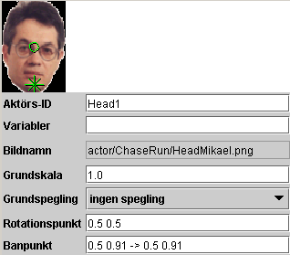 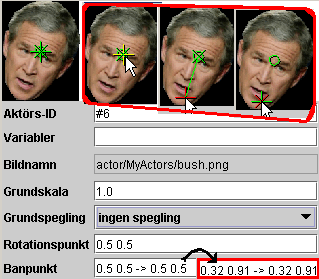
Som synes finns det tre gröna markeringar i respektive bild – en cirkel, ett kors och ett kryss. Cirkeln representerar en ”Rotationspunkt”, vilken just nu är mindre intressant. Korset och krysset representerar s.k. ”Banpunkter”, dvs de punkter där aktören fästs mot sin bana i animationen – vid dess början och slut. På ”Head1” är dessa banpunkter placerade på aktörens haka. På Bush-huvudet är alla tre punkterna placerade mitt i pannan. Flytta nu ”banpunkterna” (korset och krysset) enligt de infällda bilderna i röd ram. När musen pekar på punkterna färgas en av dem gul. Om det inte är den önskade punkten förs muspekaren bort och tillbaka igen – då markeras nästa punkt gul. Tag med musen tag i kors-punkten när den är gulmarkerad och dra den till hakområdet enl bilden. Gör sedan samma sak med krysset. Siffervärdena ändras för banpunkterna, för att hamna ungefär på de värden som visas infällda i bilden ovan. Upprepa detta även för Saddam-aktören!
· Provkör animationen igen. Nöjd? Ändra ev. ”Grundskalan” (storleken) på de nya huvudena, t.ex. till värdet 0.8. OBS att decimalpunkt – inte decimalkomma – måste användas för alla parametrar i Animationeditorn!
· Avsluta redigeringen av animationen med att ersätta de anonyma #6- och #7-värdena för Aktörs-ID med valfria lämpliga referenser – t.ex. ”Bush” och ”Saddam”, eller ”Head5” och ”Head6”. Spara animationen och stäng Animationseditorn.
· Vi är nu tillbaka i Lektionseditorn och kan där lägga till orden ”Bush” och ”Saddam” med referenser till de nya aktörerna i animationen. (Se föregående kapitel för detaljer om hur detta går till – ljudfiler finns i ”extra”-mappen.).
För en viss elev kan en viss animation upplevas som alltför kort/snabb – eller för lång(sam). Detta kan motivera en justering av längden på enskilda animationer. Vi skall nu se hur detta går till.
· Starta Lektionseditorn, öppna lektionsfilen ”demo.omega_lesson” i lektionen ”Xercise-Demo1” i mappen ” Xercises” i ”X-Demo”-lektionerna. Skapa en mening som innehåller ordet ”jagar”. Klicka sedan på ”Redigera anim”. Animationseditorn med ChaseChased.omega_anim visas ungefär som nedan:
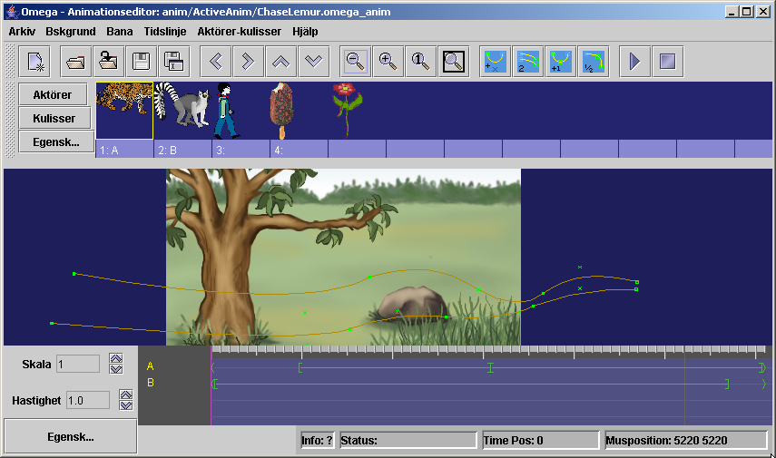
· Nederst på skärmen finns ”Tidslinjen” där animeringsbanorna finns representerade. Dessa sträcker sig över en tidsrymd om c:a 6 sekunder. Vi vill nu komprimera skeendet till c:a 4 sekunder. Provkör först animationen (i maximerat fönster) för att få en känsla för ursprungshastigheten. Pröva nu att förkorta den översta banans längd på tidslinjen genom att med Ctrl-musklick ta tag i banans slutmarkering (”]”) och dra den till c:a 4,1 sek enl. nedan.
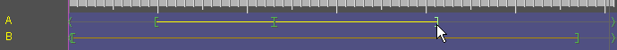
· Upprepa sedan proceduren för den nedre banan (till c:a 3,9 sek), och förkorta slutligen hela animationstiden genom att Ctrl-dra en av (och därmed alla) slutmarkörerna ”>” till positionen c:a 4,2 sek enl. nedan. (OBS! Ett litet fel i programkoden gör att animationslängden vid Ctrl-musklick på markören först förlängs med c:a 0,8 sek. Strunta i detta, och den avvikelse som uppstår mellan muspekaren och markören, och dra slutmarkörerna till rätt position enligt bilden.)

· Provkör nu åter animationen. Blev resultatet bättre eller sämre? Spara animationen om resultatet av ändringen är bättre än ursprunget. Fortsätt annars gärna att leka med banornas längd och pröva resultaten. Avsluta sedan Animationseditorn – efter att ha sparat, om så önskas.
Vi fortsätter med samma Xercise-Demo1-lektion som i föregående stycke.
· Skapa nu en mening som innehåller frasen ”hoppar över”. Klicka på knappen ”Redigera anim”. Animationseditorn visas ungefär som nedan med animationen ”JumpOver.omega.anim” (i mappen /anim/MyAnim):
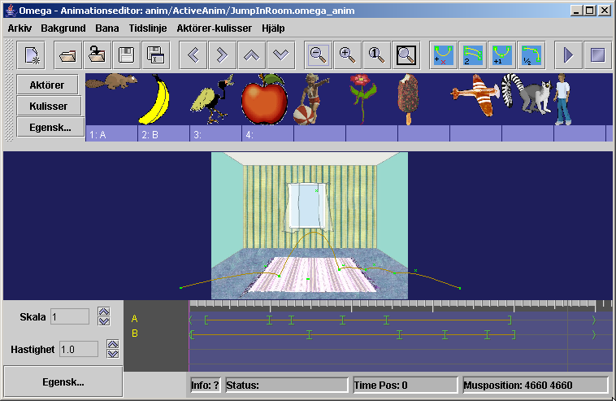
· Vi skall nu ändra bakgrundsmiljön för denna animation. Öppna menyn ”Bakgrund” och klicka på ”Välj bakgrund”. Öppna mappen ”background” och välj bilden ”schoolyard1.jpg”. Detta skulle förstås lika gärna, eller ännu hellre, kunnat vara en bild på den egna skolgården, eller det egna klassrummet.
· Scenen kommer nu att se ut som bilden under nästföljande stycke. Vi kommer där att göra nödvändiga justeringar av animeringsbanornas lägen och utformning.
Bilden nedan visar resultatet av föregående övnings byte av bakgrundsbild. En provkörning av animationen (i maximerat fönster) visar att animeringsbanorna hamnar lite högt mot den nya bakgrunden. Vi ska nu flytta ner de båda banorna något i scenen.

· För muspekaren, som bilden ovan visar, mot den inringade gruppen av gröna punkter i den överhoppade aktörens hopdragna bana. Som synes ändrar muspekaren utseende – från en hand till en förflyttningsmarkör – när den närmar sig banpunkterna.
· Tryck och håll nere Skift-tangenen och klick-dra med musen hela denna bana och dess banpunkter rakt neråt – ungefär som den blå pilen visar.
· Gör motsvarande förflyttning av den hoppande aktörens utsträckta bana – genom att Skift-klick-dra en av den banans punkter neråt i relation till bakgrundsbilden - ungefär lika långt som i föregående moment.
· Provkör nu animationen för att se resultatet. (Det kan tyvärr vara lite svårt att se nedersta delen av animationen eftersom scenen beskärs en del av verktygen i Animationseditorn. Full kontroll på resultatet får man i så fall när animationen sparats och körs från en lektion – se nedan.) Gör ev. ytterligare justeringar av banornas placering, spara animationen och stäng Animationseditorn.
Tillbaka igen i Lektionseditorn:
· Här kan nu lektionen Xercise-Demo1 provköras med de två animationerna som vi modifierat. Om något inte ser riktigt bra ut är det bara att via ”Redigera anim”-knappen återvända till respektive animation för vidare bearbetning i Animationseditorn – som i nästa stycke nedan…
Vi håller oss kvar i lektionen Xercise-Demo1, och återvänder till ”hoppa över”-animationen för några ändringar i de hoppande aktörernas bana.
· Skapa en mening med ”hoppar över” och välj ”Redigera anim”. Vi börjar med att öka höjden på hoppet över den stillastående aktören:
· Animationsscenen bör, efter våra tidigare ändringar se ut ungefär som bilden nedan. Leta med musmarkören upp den lilla gröna krysspunkt som markerar det ”krökningshandtag” som bestämmer hoppbågens krökning. Muspekaren ändras från hand till ”flyttmakör” när du närmar dig punkten (nedre positionen i det med rött inringade området i bilden.) Om du klickar på krysspunkten blir den rödmarkerad.
· Ta nu tag i punkten (med musen) och dra den uppåt – ungefär som den rosa-violetta pilen visar. Hoppbågen följer med i motsvarande grad som bilden indikerar. Provkör, och justera vidare tills resultatet är till belåtenhet.
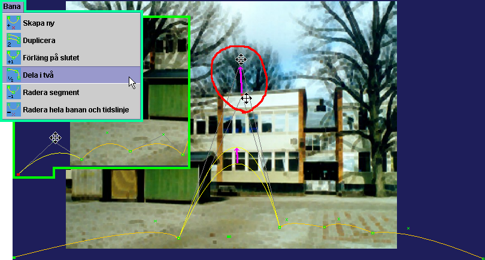
Vi ska nu göra den hoppande aktörens entré lite ”skuttigare” genom att ge den några extra böjar:
· Börja med att klicka på banans startpunkt – den fyllda lilla fyrkanten nere till vänster – så att den blir rödmarkerad (som i den infällda delen av bilden ovan).
· Öppna menyn ”Bana” och klicka på ”Dela i två” (turkos ram i bilden ovan). Det första segmentet i banan delas nu upp i två delar. Upprepa proceduren för det nya första segmentet. Vi har nu tre segment innan hoppet.
· Böj nu de tre segmenten med hjälp av dess kryssformade krökningshandtag – som indikeras i bilden ovan. Provkör, justera och spara.
Det finns många andra saker att upptäcka, undersöka och ändra på i denna hoppa-över-animation. Ta gärna en titt på ”markörsegenskaperna” för de olika makörerna, eller ”trigger-punkterna, utefter de två banorna på Tidslinjen.
· Öppna dialogfönstret för markörsegenskaperna genom att klicka på knappen ”Egensk…” längst ner till vänster om Tidslinjen (eller högerklicka på en av banorna på Tidslinjen och välj ”Markörsegenskaper”).
· Klicka sedan på de olika markörerna för att se vad som händer i respektive punkt. Vi går här inte närmare in på de olika funktionerna och hur de kan hanteras och utnyttjas. Vi återkommer till detta i nästföljande stycken. Bara en titt på funktionerna i denna animation ger en inblick i några av möjligheterna – att spela upp effektljud, att skala om (ändra storlek på) aktörer, att byta ”lager” (framför-mellan-bakom...), att rotera aktörer etc.
Vi ska nu gå igenom skapelseprocessen för en helt ny Omega-is-animation: Vi väljer att låta scenen föreställa en rymdscen – med måne och komet. Allt nödvändigt mediamaterial finns med i installationen:
· Avsluta Omega-is eller Lektionseditorn, om någon av dem är igång
· Starta Animationseditorn från startikonen ”Animation Editor”
· Maximera fönstret till fullskärm
· Det är lämpligt att redan nu spara denna nya animation med sitt ointressanta grundinnehåll under ett eget namn. Välj Arkiv – Spara (eller Spara som – det kvittar i detta läge). Spara animationen i mappen ”anim\MyAnim” t.ex. under namnet ”MyMoonComet”.
· Välj i menyn ”Bakgrund” – ”Välj bakgrund”. Du hamnar då i öppna-fil-dialogen i mappen ”media”.
· Öppna mappen ”background”, och leta där reda på filen ”comet.jpg” och öppna den.
Spara gärna animationen igen efter detta steg, och sedan efter varje större tillägg I fortsättningen!
Vi har nu fonden för vår rymdscen. Vi skall nu strax låta några aktörer röra sig på denna scen. Men först:
För att få en illusion av djup i scenen skulle det vara bra att kunna få aktörerna att röra sig både bakom och framför månen och kometen. Detta åstadkommer vi genom att placera två kulisser framför månen och kometen – kopior av dessa båda objekt.
· Klicka på knappen ”Kulisser” t.vä. om Aktörs-/Kuliss-raden.
· Högerklicka på den första av de tomma kulissplatserna – eller klicka på knappen ”Egenskaper”, så att dialogfönstret ”Kulisser – Egenskaper” öppnas – se bilden nedan.
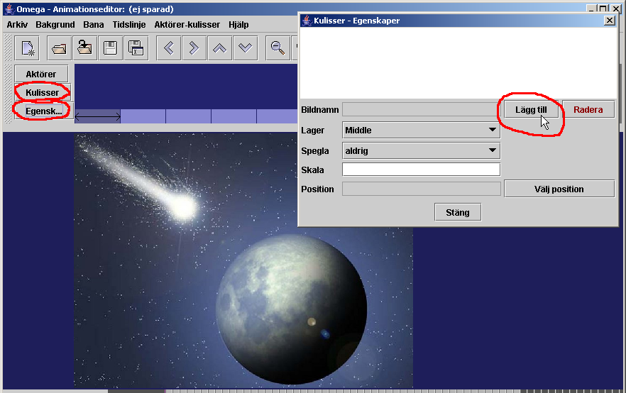
· Klicka nu på knappen ”Lägg till” för att välja kulissbild. Vi hamnar åter i öppna-fil-dialogen, som pekar på ”background”-mappen där vi nyss var. Gå tillbaka i mappträdet till ”media” och sedan in i ”Wings”. Välj filen ”comet.png” (se bild t.hö.)
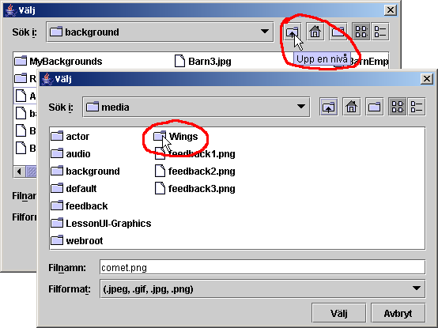
Som bilden nedan visar dyker en kopia av en del av kometen upp med en röd ram runt sig. När ramen är röd kan man med musen ta tag i kulissen och flytta den till önskad plats på scenen/bakgrundsbilden – i det här fallet ovanpå bakgrundsbildens komet, så att den smälter in i bilden utan att synas. Men OBS att man kan flytta kulissen en gång i taget. Så snart man släpper den på en ny positions blir ramen gul och oflyttbar. För att få den flyttbar igen måste man klicka på knappen ”Välj position” i ”Kulisser – Egenskaper”-dialogen, etc.
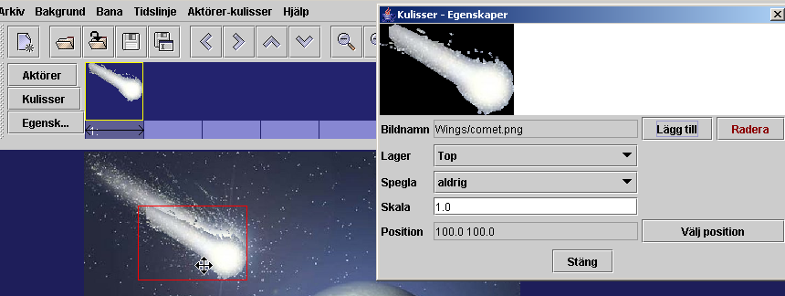
· Klicka sedan på listknappen för ”Lager” och välj ”Middle” – se bild ovan och nedan.
· (I ”Kulisser – Egenskaper”-dialogen har man som synes, också möjlighet att ändra skala/storlek på kulissen, samt att spegla den horisontellt eller vertikalt. Men detta har vi inget behov av i detta fall.)
· Klicka på den tomma platsen för kuliss (t.hö. om kometen). Dialogen ”Kulisser – Egenskaper” visar ett tomt innehåll för denna aktörsplats. Fyll den med nytt innehåll genom att upprepa proceduren ovan – klicka på ”Lägg till” (nu är vi redan i rätt mapp) och välj kulissen ”BlueMoon.png” – placera den ovanpå sitt original – ändra Lager från ”Top” till ”Middle”. Skärmen bör se ut ungefär som nedan:
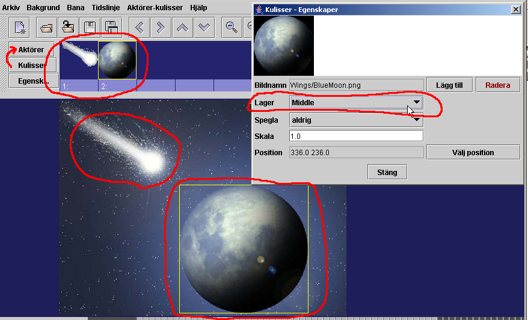
· Avsluta med att stänga ”Kulisser – Egenskaper”, och gå tillbaka till visning av aktörer genom att klicka på knappen ”Aktörer” (röd pil i bilden ovan).
Nu är det dags att lägga in aktörernas banor i rymdscenen:
1. Lägg in en ny aktörsbana genom att i menyn välja ”Bana” – ”Skapa ny”, eller genom att klicka på motsvarande symbol i verktygsraden (se bild nedan). Den nya banan visas överst i bakgrundsbilden, och nederst på Tidslinjen.
2. Tryck och håll Skift-tangenten och tag med musen tag i banans startpunkt (den vänstra fyllda punkten) och dra den ner till ung. position 2. enligt bilden nedan.
3. Tag med musen (OBS utan Skift!) tag i banans slutpunkt (den högra ofyllda lilla fyrkanten) och dra den ungefär till position 3. på bilden.
4. Tag med musen tag i ”böjningspunkten” (det lilla krysset) och justera banans böjning genom att dra den ungefär till position 4. enligt bilden.
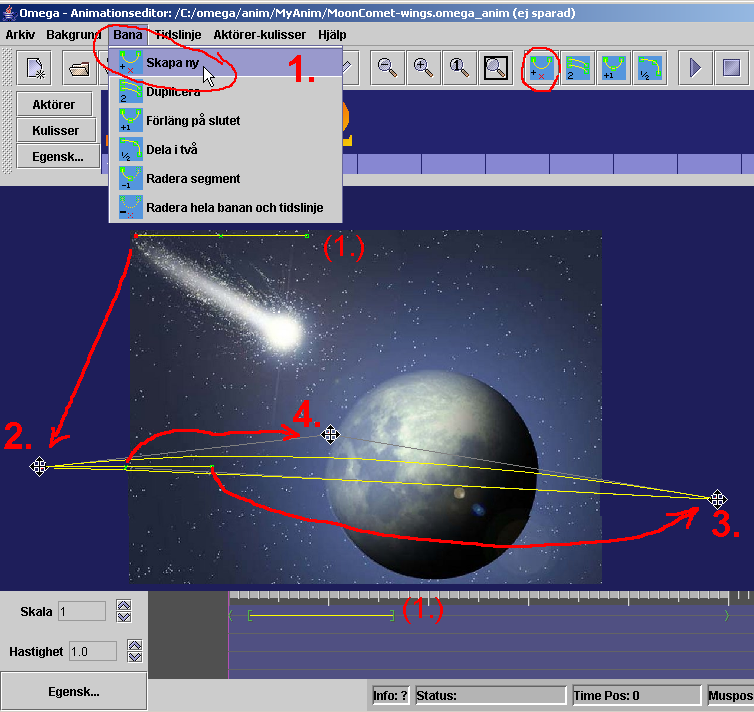
· Lägg nu till ytterligare en aktörsbana genom att upprepa processen ovan, och så att resultatet ser ut ungefär som på följande bild.
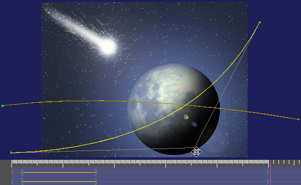
· Provkör gärna animationen. Resultatet är kanske inte så imponerande: Två av Omega-aktörerna seglar snabbt förbi bakom/bortom månen. Vi skall strax försöka bättra på animationen med nya aktörer och andra anpassningar.
Vi fortsätter med att välja några mer passande aktörer:
· Högerklicka på den första platsen i aktörslistan (eller vänsterklicka på rutan och sedan på knappen ”Egensk...”). Vi skall ersätta Omega-aktören med en raket.
· Klicka på
”Välj”-knappen, och gå sedan i hämta-dialogen
till mappen ”(media\)actor\Things” och leta reda på
aktören ”rocket(.png)”.
OBS att här finns ytterligare fyra bilder som heter
”rocket-01”, ”rocket-02”, ”rocket-00”,
samt ”rocket-NoAnim! Sifferattributen innebär att
rocket-aktören kommer att få en ”inre”
animation. Detta åstadkoms genom att programmet kommer att
växla mellan bilderna med tillägget -01, -02, osv till-00
med en grundhastighet av 0,2 sek per bild. Mer om detta nedan.
Passa på att skriva in ett passande ”Aktörs-ID”
för aktören – t.ex. ”rocket” eller
”raket”. Ytterligare ev. justeringar i Aktörsegenskaperna
avvaktar vi med.
· Klicka nu på
aktörsplats nummer 2, och ersätt enligt ovan denna
Omega-aktör med aktören ”potato.png” (från
samma mapp -
”(media\)actor\Things”).
Ge även denna aktör ett lämpligt ID, och sätt
dess ”Grundskala” till ”0.4 ”.

· Stäng dialogen ”Omega – Aktörsegenskaper” och provkör.
Det är nu dags att göra en del anpassningar av hur animationen genomförs tidsmässigt, och hur aktörer och kulisser förhåller sig till varandra, kulisserna och bakgrunden:
· Animationen går väldigt fort. Vi börjar med att förlänga tidsförloppet
1. Tryck och håll Ctrl-tangenten och ta tag och drag med musen högerkanten av den grå markeringen (och högerhaksmarkörerna) – från 5-sekunders-markeringen till 7-sekundersmarkeringen enligt 1 på bilden nedan.
2. Ctrl-drag högermarkörerna på vardera av de två banorna på Tidslinjen, så att dessa förlängs ungefär enligt 2 på bilden nedan.
3. Tryck och håll nu Skift-tangenten och drag hela den översta/första banan åt höger – dvs senare – på Tidslinjen, ungefär enligt bilden nedan. Provkör!

Nu rör sig de båda aktörerna lite långsammare – potatisen/asteroiden med ett försprång före rymdraketen. Men vi vill nu ytterligare förfina beteendet genom att lägga in händelser och egenskaper för aktörerna på Tidslinjen. (Spara gärna animationen!)
· Först lite grundanpassningar för Raketens beteende:
1. Öppna dialogen ”Markörsegenskaper” – klicka på knappen ”Egensk…” längst ner till vänster om Tidslinjen (eller högerklicka på en av markörerna/banorna på Tidslinjen och välj ”Markörsegenskaper” från pop-up-menyn.
2. Klicka nu på den Tidslinjens startmarkör (den lilla gröna vänsterhaken ”<”) för den första/översta banan. Vi ser nu egenskaperna för just den markören.
3. Börja med att ge denna bana ett ”Ban-ID”, genom att skriva in ett ”A” i Ban-ID-fältet högst upp i dialogen (se bilden nedan).
4. Vi skall nu få raketen att flyga framför/hitom
månen:
Klicka på listboxen
vid rubriken ”Lager” och välj ”Framför”.
Klicka också i den lilla kryssrutan till höger om
denna egenskap – enligt bilden nedan
· Nu gör vi motsvarande anpassningar för den andra banan – potatisens:
1. Klicka på Klicka på Tidslinjens startmarkör för den andra banan, så att dess egenskaper visas.
2. Även denna bana ges ett ”Ban-ID”, i detta fall ”B”.
3. Vi sätter nu rotation på banans aktör genom att skriva in Argumentet ”380” (grader per sek.) i rotationshastighet vid fältet för ”Rotera objekt” – och aktiverar funktionen genom att klicka i/bocka för ”Påslagen”-rutan.
4. Vi låter också vår aktör minska i storlek genom att i fältet för ”Skala objekt” skriva in argumentet ”-0.2 0.2”. OBS decimalpunkter och blanksteg mellan talen! Detta betyder att objektet minskar i storlek (från sin grundskala) med en faktor på –0.2 (minusvärde minskar storleken och plusvärde ökar den), och till en slutskala av 0.2.
5. Slutligen väljer vi att starta uppspelningen av ett effektljud genom att klicka på ”Välj”-knappen vid ”Spela ljud”-händelsen. Vi hamnar i mappen ”media\audio” och letar där upp ljudet ”SpaceSounds.wav(mp3)”. Bocka för i ”Påslagen”-rutan! Resultatet bör se ut som nedan. Provkör och spara!
· Vi ska nu lägga till ytterligare några händelsemarkörer på bana A – för att se hur ”bildattribut” fungerar:
1. Högerklicka på bana A (på Tidslinjen) ungefär vid 3-sekundersmarkeringen – välj ”Lägg till händelse” från pop-upp-menyn – en ny markör dyker upp på bana A.. Se till att dialogfönstret för Markörsegenskaper visas – klicka på den nya markören, så att det är dess egenskaper vi ser.
2. Skriv in ”NoAnim” vid fältet för ”Välj bildattribut”, och bocka för ”Påslagen”-rutan. Detta innebär att grundaktören ”rocket.png” (med sina animationsvarianter) här byts ut mot ”rocket-NoAnim.png”, och medför att det ser ut som om raketmotorn släcks i animationen.
3. Lägg på samma sätt till ytterligare en ny händelsemarkör på bana A – ungefär vid 4,5-sekunder – och bocka för ”Påslagen”-rutan vid markörens bildattribut-händelse – OBS; utan att skriva in något attribut. På så sätt nollställs attributet, och raketens/motorns animering återupptas.
· Vi skall runda av med att lägga till ytterligare en typ av händelse och markör på bana A, nämligen en s.k. ”Tidssynk”. Denna kommer att företrädas av en markör både på banans representation på Tidslinjen och på Scenen, och den används för att påverka hur tidsförloppet fördelas över banan på Scenen.
1. Högerklicka på bana A (på Tidslinjen) vid
c:a 4,8 sek – lite t.h. om den andra tillagda
händelsemarkören.
Välj ”Lägg
till tidssynk” från högerklicksmenyn.
Två violetta markörer dyker upp – en takformad
på bana A på Tidslinjen, och en liten kvadratisk på
bana A på Scenen (se bild).
2. Ctrl-drag nu den fyrkantiga markören lite åt
vänster mot månens kant – enligt den röda pilen
på bilden nedan.
Provkör: Effekten bör vara att raketen rör sig in
mot månen i långsammare fart, och sedan sätter upp
farten när raketmotorerna åter tänds.
· Spara åter animationen, och fortsätt gärna att lägga till nya aktörer och/eller banor. Ett förberett lämplig alternativ/komplement som aktör, vid sidan av rymdraketen (”rocket.png”), är t.ex. ”FlyingSaucer.png”.
· En något utvecklad version av den animation vi skapat ovan finns i mappen ”PassiveAnim” under namnet ”MoonCometX.omega_anim”. Titta och lek med den, och jämför med resultatet av övningen ovan.
Förutom de funktioner vi nu gått igenom, innehåller Animationseditorn ytterligare ett antal möjligheter som vi inte fått tillfälle att utnyttja i exemplen ovan. Vi hänvisar till listningen av funktioner och kommandon nedan för information om dessa. Men innan dess rundar vi av med några ord om inre animation, möjligheterna med att använda variabler i animationerna etc.
Som vi nämnt ovan (under ”Lägga in aktörer”) åstadkoms inre animation – dvs aktörens egenrörelser, t ex en ”gående” rörelse – genom att programmet automatiskt växlar mellan bilder med samma namn, men med tillägget -01, -02, osv till-00, och med en grundhastighet av 0,2 sek per bild. Detta innebär bl a följande:
· Om man länkar till en aktörsbild i en mapp där det finns bilder med samma namn med tilläggen -01, …, -00, så kommer aktören att automatiskt visas med en inre animation baserad på dessa bilder.
· Serien måste alltid börja med ”bildnamn-01.png” och avslutas alltid med ”bildnamn-00.png”. Ju fler bilder det är i serien, desto mer detaljerad inre animation kan det bli frågan om. Hastigheten på den inre animationen är normalt 0,2 sek per bild (5 bilder per sekund), men kan givetvis justeras med hjälp av egenskapsdialogen för aktörens Tidslinje.
· Om man vill
undvika inre animation måste man anropa en aktör med
bildnamn utan numrerad animationsserie, eller anropa ett attribut
(till en animerad bild) som inte har någon animationsserie –
exempel:
I mappen C:\omega\media\actor\FeedEat hittar vi en mängd
bildserier, bl a
Tiger.png,
Tiger-01.png, Tiger-02.png, Tiger-00.png
Tiger-Eating.png, Tiger-Eating-01.png,…,
Tiger-Eating-04.png, Tiger-Eating-00.png
Tiger-Wait.png,
Tiger-Wait-01.png, Tiger-Wait-00.png
Tiger-Still.png
Detta betyder att man med aktören
”Tiger.png” får en inre animation baserad på
3 delbilder, med attributet ”Eating” en animation om 5
delbilder, med attributet ”Wait” en animation om 2
delbilder, och med attributet ”Still” en tiger utan inre
animation.
För mer avancerade kopplingar mellan animationernas aktörer, deras banor, effektljud och attribut, samt till val gjorda i lektionerna kan man i animationerna (liksom i lektionerna) använda sig av variabler. Detta illustreras enklast och bäst med hjälp av ett par exempel från de animationer som medföljer Omega-is:
· Förenklad ”osynlig” variabel för effektljud:
- Öppna t ex animationen ”ChaseChased1.omega_anim”.
I denna, liksom i många
andra animationer, används ett förenklat sätt att
anropa effektljudfiler med aktuellt aktörs-ID som variabel.
- Öppna dialogen för Markörsegenskaper –
för den första tillagda aktivitetsmarkören (efter
startmarkören, Ordningstal=2), bana A på Tidslinjen.
Där
anges det något anonyma ljudet ”audio/sound.wav(mp3)”
vid Spela ljud.
Detta innebär att ett ljud med namnet ”sound-”
plus aktörs-ID för den använda aktören spelas upp
(om detta finns) – t ex ”sound-lion” om det är
lejonet som är vald aktör. Och på detta tämligen
enkla sätt kan effektljud kopplas till vilken eller vilka
aktörer som används i animationerna vid varje tillfälle.
· Explicit variabel för effektljud:
- Öppna animationen ”StopsInRelationTo1.omega_anim”.
Som framgår av Aktörsegenskaperna
har de tre första aktörerna var sin variabel –
”carStop”, ”mcStop” respektive
”busStop”.
- Öppna dialogen för Markörsegenskaper –
för startmarkören (Ordningstal=1) på bana A på
Tidslinjen.
Där anges, vid Spela ljud, att ett ljud med namnet ”
audio/${A:1}.wav(mp3)”.
Detta innebär att ett ljud med namnet hämtat från
variabel 1 för aktuell aktör på bana A. skall spelas.
Det betyder i klartext att ljudfilens namn här kan vara
”audio/carStop.wav(mp3)”, ”audio/mcStop.wav(mp3)”
eller ”audio/busStop.wav(mp3)”.
- Motsvarande gäller för ljudvalet på bana B.
· Variabel i bildattribut:
- Öppna animationen ”KickToPerson.omega_anim”.
I denna finns bl a en boll och en knippa ballonger bland
aktörerna.
Som framgår
av aktörsegenskaperna representeras respektive aktör av
bilderna ”\actor\KickThrow\BallSoc.png” och
”\actor\KickThrow\balloon.png”
Där framgår
också att dessa aktörer har var sin variabel –
”Ball” respektive ”Balloons”.
- Öppna nu dialogen för Markörsegenskaper
– för den sista tillagda aktivitetsmarkören (före
slutmarkören – Ordningstal=4), bana C på Tidslinjen.
Där anges att ett bildattribut skall användas som heter
”Catch${B:1}”. Det betyder i klartext att attributet
skall vara ”Catch” + innehållet i variabel 1 för
aktören på bana B, dvs ”Ball” eller ”Balloons”
enligt ovan.
Bildattributet blir alltså antingen ”CatchBall”
eller ”CatchBalloons”, vilket motsvaras av bilderna
”actor\KickThrow\BlondGirl3-CatchBall.png” resp
”…\BlondGirl3-CatchBalloons.png”.
· Koppling mellan variabler i lektion och animation:
- Öppna Lektionseditorn, och därifrån
lektionen:
”…\lesson-sv\active\J_Långa_meningar\J2\
J2.omega_lesson”.
- Bilda meningen ”Den snabba lemuren jagar den
rädda musen över ängen”
Som
framgår av informationen ovanför meningsraden kopplar
ordet ”musen” till en aktör med Aktörs-ID
”mouse:scared” på en bana med Ban-ID ”B”
i den animation som anropas (via egenskaperna i ordet ”jagar”
– inkl två variabler).
- Klicka nu på ”Redigera anim”. Animationeseditorn öppnas med animationen ”ChaseFastOverMeadow.omega_anim”.
- Öppna Aktörsegenskaperna för t ex den rädda musen (nr 3 från slutet). Där återfinns aktörs-ID:t ”mouse:scared”, och denna aktör har också försetts med variabeln ”Scared”. Den används sedan för att spela upp ett passande ljud på bana B vid Tidslinjen – se markörsegenskaperna för den första (”<”) markören (ordningstal=0).
- På detta sätt har variabeln ”scared” hos ordet ”rädda” i lektionen kopplats vidare till variabeln ”Scared” i animationen, och där vidare till ett lämpligt effektljud.
- Fr.o.m version 1.2 är det också möjligt att referera direkt från markörsegenskaperna ttill en variabel tillhörande ett word som valts för en viss meningsetikett i den lektion som kallat på animationen; Skriv t.ex. i markörsegenskaperna - för Bildattribut eller Ljudfil - "${@S:2}" för att plocka upp variabel 2 från det ord som valts för etiketten 'S' i den lektion och mening som anropat animationen.
· Reservkopior – prev- och prev.prev-filer: Dessa reservkopior skapas varje gång en animation redigeras och sparas om. Om något fel skulle uppstå kan man alltid återskapa tidigare version genom att döpa om en ”animation.prev” till ”animation.omega_anim”. Ibland kan det bli dags att städa bort onödiga prev och prevprev-filer ur animationsmapparna.
· Om två aktörer skall animeras i nära relation till varandra är det en god idé att göra på följande sätt:
- Skapa den ena aktörens bana och utforma den med alla eller de flesta detaljerna som önskas – både på scen och vid tidslinjen.
- Använd sedan kommandot ”Duplicera” bana för att få en exakt kopia av den första, och gör sedan önskade justeringar av denna kopia: Flytta t ex hela banan med Skift+drag (med musen) både på scen och på tidslinjen för att få en lämplig relation mellan de kopplade aktörerna rumsligt och tidsmässigt i animationen.
· Lägg egna
nyproducerade animationsfiler i mappen
”anim\MyAnim”
och tillhörande nya mediafiler i motsvarande mediamappar –
”media\background\MyBackgrounds”
”media\Wings\MyWings”
”media\actor\MyActors” och
”media\audio\MyAudio”
Då blir det lättare
att hålla reda på vilka filer som behöver kopieras
med, och var de skall placeras, om egna nya animationer och lektioner
skall kopieras till andra datorer – och förhoppningsvis
till Omega-is webbplats www.omega-is.com
för att delas av andra.
Här följer en listning av kommandon och funktioner i Omega-is Animationseditor:
Arkiv:
 Nytt
– öppnar en ny och tom animationsfil
Nytt
– öppnar en ny och tom animationsfil
Öppna – visar öppna-dialogen för att hämta en befintlig animation
 Öppna
igen – öppnar den senast sparade versionen av
öppnad animation
Öppna
igen – öppnar den senast sparade versionen av
öppnad animation
Spara – sparar öppen animation under aktuellt namn
Spara som – visar Spara-dialogen för angivande av namn på filen
Avsluta – avslutar Animationseditorn – via kontrollfråga.
Bakgrund:
Välj bakgrund – visar Välj-dialogen för att öppna en bakgrundsbild
 Vänster
– flyttar hela scenytan med bakgrund och allt åt vänster
på skärmen
Vänster
– flyttar hela scenytan med bakgrund och allt åt vänster
på skärmen
 Höger
– flyttar hela scenytan med bakgrund och allt åt höger
på skärmen
Höger
– flyttar hela scenytan med bakgrund och allt åt höger
på skärmen
 Upp
– flyttar hela scenytan med bakgrund och allt uppåt på
skärmen
Upp
– flyttar hela scenytan med bakgrund och allt uppåt på
skärmen
Ner – flyttar hela scenytan med bakgrund och allt neråt på skärmen
OBS – ovanstående flytta-kommandon kan göras med musen – drag-släpp
 Mindre
– zoomar ut bakgrund/scen med c:a 25%
Mindre
– zoomar ut bakgrund/scen med c:a 25%
 Större
– zoomar in bakgrund/scen med c:a 30%
Större
– zoomar in bakgrund/scen med c:a 30%
 1:1
– återställer bakgrund/scen till grundstorlek
1:1
– återställer bakgrund/scen till grundstorlek
 Anpassa
till fönster – zoomar bakgrund/scen till
tillgänglig fönsterstorlek
Anpassa
till fönster – zoomar bakgrund/scen till
tillgänglig fönsterstorlek
Bana:
Skapa ny – lägger till en ny aktörsbana på scen – med tidslinje (upp till 4 st)
 Duplicera
– lägger till en kopia av markerad bana på scenen
(inkl. tidslinje)
Duplicera
– lägger till en kopia av markerad bana på scenen
(inkl. tidslinje)
Förläng på slutet – lägger till ett nytt segment till slutet av markerad bana
Dela i två – delar segmentet t.v. om markerad banpunkt i två delar (segmentet t.h. om startpunkten är markerad)
Radera segment – raderar segmentet t.v. om markerad banpunkt (t.h.om startpunkten)
 Radera
hela banan och tidslinje – som sagt –
efter kontrollfråga
Radera
hela banan och tidslinje – som sagt –
efter kontrollfråga
Tidslinje (animationen):
Välj hastighet – ingen funktion f n
 Kör
(Skift-P) – kör/spelar upp animationen
Kör
(Skift-P) – kör/spelar upp animationen
Stoppa (Skift-S) – stoppar körningen
Aktörer-kulisser:
Välj aktör – visar dialog för att öppna/hämta bildfil för aktör 1-4 i aktörslistan – motsvarar Bildnamn – Välj i dialogen Aktörsegenskaper – se nedan
Lägg till kuliss
– visar dialog för att öppna/hämta bildfil för
kuliss på nästa lediga plats i kulisslistan –
motsvarar Bildnamn – Lägg till i dialogen
Kulisser - Egenskaper – se nedan
Visa aktörsegenskaper (Ctrl-A) – visar dialogen Aktörsegenskaper – motsvarar högerklick med musen på en plats i aktörslistan, eller klick på knappen ”Egenskaper” t.v. om aktörs/kulisslistan
Visa kulissegenskaper (Ctrl-W) – visar dialogen Kulisser - Egenskaper – motsvarar högerklick med musen på en plats i kulisslistan
Växla aktör/kuliss (Ctrl-F) – växlar mellan visning av aktörslistan eller kulisslistan – motsvarar musklick på knapparna ”Aktörer” eller ”Kulisser” t.v. om aktörs/kulisslistan
Hjälp:
Visa manual – visar redigeringsdelarna av denna manual
Om Omega-is – visar informationsruta om Omega-is
Om Animationseditorn – visar informationsruta om Animationseditorn
Kommandon och funktioner vid Tidslinjen:
Skala
– ändrar skalan på Tidslinjen.
 -knappen
ökar skalan/omfånget,
-knappen
ökar skalan/omfånget,
 -knappen
minskar (zoomar in – ner till 0.2 av grundskalan)
-knappen
minskar (zoomar in – ner till 0.2 av grundskalan)
Hastighet
– ändrar hastigheten på animeringen.
 -knappen
ökar den – upp till 2.0 ggr grundhastigheten,
-knappen
ökar den – upp till 2.0 ggr grundhastigheten,
 -knappen
minskar den – ner till 0.5 av grundhastigheten. OBS! –
dessa inställningar är bara till för att testa
animationens utfall vid olika hastighet (som kan ställas in per
elev), och de sparas inte i animationsfilen.
-knappen
minskar den – ner till 0.5 av grundhastigheten. OBS! –
dessa inställningar är bara till för att testa
animationens utfall vid olika hastighet (som kan ställas in per
elev), och de sparas inte i animationsfilen.
Egensk… – denna knapp visar dialogen Markörsegenskaper (för den första tidsmarkören på den första/översta banans tidslinje). Dialogen visar sedan egenskaperna för den markör som fokuseras med musklick – se vidare nedan.
Högerklick-menyn på Tidslinjen:
Markörsegenskaper – visar dialogen Markörsegenskaper för den närmaste tidsmarkören på den klickade banans tidslinje.
Lägg till tidssynk – lägger till en tidssynk-markör på den klickade banans tidslinje, samt en motsvarande markör på aktörsbanan på scenen.
Lägg till aktivitet – lägger till en aktivitetsmarkör på den klickade banans tidslinje.
Avbryt – stänger högerklicksmenyn.
Ctrl + högerklick-menyn på Tidslinjen:
Markörsegenskaper – visar dialogen Markörsegenskaper för den närmaste tidsmarkören på den klickade banans tidslinje.
Radera markör – markerar med rött närmaste markör på den klickade banans tidslinje, samt öppnar en Ja-Nej-dialog för att bekräfta/avbryta åtgärden.
Avbryt – stänger Ctrl + högerklicksmenyn.
Direktmanipulering (med mus etc.) av banor och banpunkter - på Scenen:
Vanlig banpunkt – (start-, segment-, slut- och bågpunkt) klick-drag med vänster musknapp till önskad position. (Alla punkterna i bilden t.h. – markerad punkt blir röd – OBS flyttmarkör för muspekaren!)
Tidssynkmarkör – Ctrl + klick-drag med vänster musknapp till önskad position. (Violett punkt t.h. – OBS korsmarkör för muspekaren!)
Hel animationsbana – Skift + klick-drag med vänster musknapp (i valfri banpunkt) till önskad position.
Direktmanipulering av banor och markörer - på Tidslinjen:
Animationsbanans placering på Tidslinjen – Skift + klick-drag med vänster musknapp (valfritt ställe på banan) till önskad position – alternativt: Ctrl + klick-drag i banans startpunkt på Tidslinjen.

Animationsbanans längd på Tidslinjen – Ctrl + klick-drag i banans stoppunkt till önskad position på Tidslinjen.

Animationstidens längd på Tidslinjen – Ctrl + klick-drag i slutpunkt till önskad position på Tidslinjen.
Händelse- och tidssynk-markörer – Ctrl + klick-drag markören till önskad position på Tidslinjen.
· JPG-bilder – med filändelse .jpg eller .jpeg – är oftast det naturliga valet, särskilt för fotografiska bakgrundsbilder (miljoner färger)
· PNG-bilder – med filändelse .png (miljoner färger eller 256 färger)
· GIF-bilder – med filändelse .gif (256 färger)
256-färgersalternativen kan vara lämpliga för ritade bilder med distinkta färger.
För aktörsbilder är det viktig att ha figurer med transparent (genomskinlig) bakgrund, som kan röra sig snyggt över bakgrunden. Detta motiverar valet av följande format:
· PNG-bilder – antingen 256 färger med indexerad transparent bakgrundsfärg, eller miljoner färger med s.k. Alfa-kanal för den transparenta bakgrunden
· GIF-bilder – 256 färger med indexerad transparent bakgrundsfärg. Även animerade GIF-bilder (för inre animation) kan användas, men Omega-is egen metod för inre animering rekommenderas för säkrare utfall.
Samma bildformat som för Aktörerna ovan (utom animerade GIF-bilder).
------------------------------------------------------
Omega-is är utvecklat och producerat av
Omega-is projektgrupp:
Mikael Heimann, Mats Lundälv, Tomas Tjus samt Keith E. Nelson
Programmering:
Lars Nordberg – Femtio Procent Data AB, och Bengt Farre – Androtech KB
Animering
Mats Lundälv och Cathy Agostinelli
Grafik
Maria Olsson, Tommy Hagman, Oscar
Elmgren, Lisa Wikberg, Marcus Anderberg,
Daniel Sköld, Tomas
Abrahamsson, Carina Fihn och Jill Lindström.
Ljudbearbetning
Mats, Linnéa, Emma och Jakob Lundälv samt Brian Holmedal
Språk
Katarina Mühlenbock (SE), Stine Laberg (NO), Elin Styve (NO),
Rebecca Heimann (NO), Mirja Turestedt (SE, UK)
Webbsida
Mattias Twedmark
Omega-is är utvecklat med stöd från
Sverige: Hjälpmedelsinstitutet,
Vinnova/KFI, Kunskapscentrum Autism, Göteborg,
Specialpedagogiska institutet och DART/Drottning Silvias
barnsjukhus, Göteborg
Norge: Rbup/Halos samt Meltzerfonden, Universitet i Bergen

Information om hur Omega-is kan beställas fås av
Sverige: Speciapedagogiska institutet eller
Topic Data & Språkbehandling Hb,
Barnhusgatan 13, 411 11 Göteborg
Email: topic@telia.com
Norge: Regionsenter for barn og ungs psykiske helse –
Helseregion Vest, Postboks 7800, 5020 Bergen
Email: Mikael.Heimann@rbup.uib.no